| Ảnh | Nhân vật | Tệp gốc trên Commons | Tác giả | Giấy phép | Chú thích |
|---|---|---|---|---|---|
 | Tiglath-Pileser I CH01-BCE11_9-01 | TiglathPileserI.png | Carl Ferdinand Friedrich Lehmann-Haupt | Public domain | Chân dung Tiglath-Pileser I, TiglathPileserI, 1114 TCN. Ảnh: Wikimedia Commons, Public domain. |
 | Chu Vũ Vương CH01-BCE11_9-02 | King Wu of Zhou.jpg | Ma Lin | Public domain | Chân dung Chu Vũ Vương, khoảng 1225–1264 (tưởng tượng). Ảnh: Wikimedia Commons, Public domain. |
 | Chu Công Đán CH01-BCE11_9-03 | Zhou gong.jpg | Wang Qi | Public domain | Chân dung Chu Công Đán, Zhou gong, khoảng 1607 (tưởng tượng). Ảnh: Wikimedia Commons, Public domain. |
 | David CH01-BCE11_9-04 | King David, the King of Israel.jpg | Gerard van Honthorst | Public domain | Chân dung David, 1622 (tưởng tượng). Ảnh: Wikimedia Commons, Public domain. |
 | Solomon CH01-BCE11_9-05 | Nazary Istomin Savin. Church of the Deposition of the Virgin's Robe. Prophet Solomon.jpg | Nazary Istomin Savin | Public domain | Chân dung Solomon, 1627 (tưởng tượng). Ảnh: Wikimedia Commons, Public domain. |
 | Shoshenq I CH01-BCE11_9-07 | Crystal Palace sphinx.gif | Udimu | CC BY-SA 2.5 ghi công bắt buộc | Chân dung Shoshenq I, Crystal Palace sphinx (tưởng tượng). Ảnh: Wikimedia Commons, CC BY-SA 2.5. |
 | Ashurnasirpal II CH01-BCE11_9-08 | Ashurnasirpal2 stele.jpg | ChrisO ( Own work ) | Public domain | Chân dung Ashurnasirpal II, Ashurnasirpal2 stele (tưởng tượng). Ảnh: Wikimedia Commons, Public domain. |
 | Shalmaneser III CH01-BCE11_9-09 | King Shalmaneser III Istanbul Museum.JPG | Bjørn Christian Tørrissen | CC BY-SA 3.0 ghi công bắt buộc | Chân dung Shalmaneser III (tưởng tượng). Ảnh: Wikimedia Commons, CC BY-SA 3.0. |
 | Elijah CH01-BCE11_9-10 | Iliya prorok ikona Pskov.jpg | Anonimous, Pskov school | Public domain | Chân dung Elijah (tưởng tượng). Ảnh: Wikimedia Commons, Public domain. |
 | Lycurgus xứ Sparta CH01-BCE11_9-12 | Lycurgus of Sparta, Merry Joseph Blondel.jpg | Merry-Joseph Blondel | Public domain | Chân dung Lycurgus xứ Sparta (tưởng tượng). Ảnh: Wikimedia Commons, Public domain. |
 | Suppiluliuma I CH01-BCE14_12-01 | Map Hittite rule en.svg | Near_East_topographic_map-blank.svg : Sémhur derivative work: Ikonact | CC BY-SA 3.0 ghi công bắt buộc | Chân dung Suppiluliuma I, Map Hittite rule en (tưởng tượng). Ảnh: Wikimedia Commons, CC BY-SA 3.0. |
 | Akhenaten CH01-BCE14_12-02 | GD-EG-Caire-Musée061.JPG | — | CC BY-SA 2.5 ghi công bắt buộc | Chân dung Akhenaten, GD-EG-Caire-Musée061 (tưởng tượng). Ảnh: Wikimedia Commons, CC BY-SA 2.5. |
 | Nefertiti CH01-BCE14_12-03 | Nofretete Neues Museum.jpg | Philip Pikart | CC BY-SA 3.0 ghi công bắt buộc | Chân dung Nefertiti, Nofretete Neues Museum (tưởng tượng). Ảnh: Wikimedia Commons, CC BY-SA 3.0. |
 | Tukulti-Ninurta I CH01-BCE14_12-04 | Assyrian painting.JPG | Udimu | CC BY 3.0 ghi công bắt buộc | Chân dung Tukulti-Ninurta I, Assyrian painting (tưởng tượng). Ảnh: Wikimedia Commons, CC BY 3.0. |
 | Ramesses II CH01-BCE14_12-06 | Colossal bust of Ramesses II in the British Museum.jpg | Unknown artist Unknown artist | CC BY-SA 4.0 ghi công bắt buộc | Chân dung Ramesses II, 1270 TCN. Ảnh: Wikimedia Commons, CC BY-SA 4.0. |
 | Hattusili III CH01-BCE14_12-07 | Firaktin1.jpg | Klaus-Peter Simon | CC BY 3.0 ghi công bắt buộc | Chân dung Hattusili III, Firaktin1 (tưởng tượng). Ảnh: Wikimedia Commons, CC BY 3.0. |
 | Moses CH01-BCE14_12-08 | Seleznikha church - prophet Moses (18 c.).jpg | 18 century icon painter | Public domain | Chân dung Moses, thế kỷ 18 (tưởng tượng). Ảnh: Wikimedia Commons, Public domain. |
 | Ramesses III CH01-BCE14_12-09 | Penn Ramsés III 03.JPG | Miguel Hermoso Cuesta | CC BY-SA 4.0 ghi công bắt buộc | Chân dung Ramesses III, Penn Ramsés III 03 (tưởng tượng). Ảnh: Wikimedia Commons, CC BY-SA 4.0. |
 | Vũ Đinh CH01-BCE14_12-10 | 武丁.jpg | Wang Qiji of the Ming Dynasty, Wanli engraved "Three Talents Picture Club" | Public domain | Chân dung Vũ Đinh, 武丁 (tưởng tượng). Ảnh: Wikimedia Commons, Public domain. |
 | Phụ Hảo CH01-BCE14_12-11 | Fu Hao.jpg | — | CC BY 2.5 ghi công bắt buộc | Chân dung Phụ Hảo, Fu Hao (tưởng tượng). Ảnh: Wikimedia Commons, CC BY 2.5. |
 | Vasiṣṭha CH01-BCE14_12-12 | Vasistha summons Sabala, the cow of abundance, to provide for a feast.jpg | Fazi (Mughal dynasty) | Public domain | Chân dung Vasiṣṭha, 1597 (tưởng tượng). Ảnh: Wikimedia Commons, Public domain. |
 | Thành Thang CH01-BCE17_15-01 | King Tang of Shang.jpg | Ma Lin | Public domain | Chân dung Thành Thang, Chinese: 《商湯王立像》 label QS:Lzh,"商湯王立像", khoảng 1225–1264 (tưởng tượng). Ảnh: Wikimedia Commons, Public domain. |
 | Khyan CH01-BCE17_15-02 | Khyan.jpg | Juan R. Lazaro | CC BY 2.0 ghi công bắt buộc | Chân dung Khyan (tưởng tượng). Ảnh: Wikimedia Commons, CC BY 2.0. |
 | Ahmose I CH01-BCE17_15-03 | AhmoseI-or-AmunhotepI-StatueHead BrooklynMuseum.png | Keith Schengili-Roberts | CC BY-SA 2.5 ghi công bắt buộc | Chân dung Ahmose I, AhmoseI-or-AmunhotepI-StatueHead BrooklynMuseum (tưởng tượng). Ảnh: Wikimedia Commons, CC BY-SA 2.5. |
 | Hatshepsut CH01-BCE17_15-04 | Sphinx of Hatshepsut c.jpg | Sphinx_of_Hatshepsut.jpg : Postdlf derivative work: JMCC1 ( talk ) | CC BY-SA 3.0 ghi công bắt buộc | Chân dung Hatshepsut (tưởng tượng). Ảnh: Wikimedia Commons, CC BY-SA 3.0. |
 | Thutmose III CH01-BCE17_15-05 | TuthmosisIII.JPG | en:User:Chipdawes | Public domain | Chân dung Thutmose III, TuthmosisIII (tưởng tượng). Ảnh: Wikimedia Commons, Public domain. |
 | Viśvāmitra CH01-BCE17_15-08 | Menaka Vishwamitra by RRV.jpg | Raja Ravi Varma | Public domain | Chân dung Viśvāmitra, Vishwamitra and Menaka (tưởng tượng). Ảnh: Wikimedia Commons, Public domain. |
 | Hammurabi CH01-BCE20_18-01 | F0182 Louvre Code Hammourabi Bas-relief Sb8 rwk.jpg | Mbzt | CC BY 3.0 ghi công bắt buộc | Chân dung Hammurabi, F0182 Louvre Code Hammourabi Bas-relief Sb8 rwk (tưởng tượng). Ảnh: Wikimedia Commons, CC BY 3.0. |
 | Amenemhat I CH01-BCE20_18-02 | Lintel of Amenemhat I and Deities MET DP322055.jpg | This file was donated to Wikimedia Commons as part of a project by the Metropolitan Museum of Art . See the Image and Data Resources Open Access Policy | CC0 | Chân dung Amenemhat I (tưởng tượng). Ảnh: Wikimedia Commons, CC0. |
 | Senusret III CH01-BCE20_18-03 | Head of King Senusret III in Gulbenkian Museum.JPG | Movses | CC BY-SA 4.0 ghi công bắt buộc | Chân dung Senusret III (tưởng tượng). Ảnh: Wikimedia Commons, CC BY-SA 4.0. |
 | Shamshi-Adad I CH01-BCE20_18-04 | Samsi Addu.PNG | Near_East_topographic_map-blank.svg : Sémhur derivative work: Zunkir ( talk ) | CC BY-SA 3.0 ghi công bắt buộc | Chân dung Shamshi-Adad I, Samsi Addu (tưởng tượng). Ảnh: Wikimedia Commons, CC BY-SA 3.0. |
 | Zimri-Lim CH01-BCE20_18-05 | Tablet Zimri-Lim Louvre AO20161.jpg | Unknown author Unknown author | Public domain | Chân dung Zimri-Lim, khoảng 1780 TCN. Ảnh: Wikimedia Commons, Public domain. |
 | Abraham CH01-BCE20_18-06 | Guercino Abramo ripudia Agar (cropped).jpg | Guercino | Public domain | Chân dung Abraham, 1657 (tưởng tượng). Ảnh: Wikimedia Commons, Public domain. |
 | Socrates CH02-BCE05-01 | Socrates Louvre.jpg | Copy of Lysippos (?) | Public domain | Chân dung Socrates, thế kỷ 1 (tưởng tượng). Ảnh: Wikimedia Commons, Public domain. |
 | Herodotus CH02-BCE05-03 | Marble bust of Herodotos MET DT11742 (cropped).jpg | This file was donated to Wikimedia Commons as part of a project by the Metropolitan Museum of Art . See the Image and Data Resources Open Access Policy | CC0 | Chân dung Herodotus, Marble bust of Herodotos, thế kỷ 2 (tưởng tượng). Ảnh: Wikimedia Commons, CC0. |
 | Hippocrates xứ Cos CH02-BCE05-04 | Hippocrates rubens.jpg | Paulus Pontius / After Peter Paul Rubens | Public domain | Chân dung Hippocrates xứ Cos, Hippocrates rubens, 1638 (tưởng tượng). Ảnh: Wikimedia Commons, Public domain. |
 | Democritus CH02-BCE05-05 | Bust of an unknown Greek - Museo archeologico nazionale di Napoli.jpg | Original uploader was Odysses | CC BY-SA 3.0 ghi công bắt buộc | Chân dung Democritus, Bust of an unknown Greek - Museo archeologico nazionale di Napoli (tưởng tượng). Ảnh: Wikimedia Commons, CC BY-SA 3.0. |
 | Aeschylus CH02-BCE05-06 | Aeschylusathens.jpg | Tilemachos Efthimiadis | CC BY-SA 2.0 ghi công bắt buộc | Chân dung Aeschylus (tưởng tượng). Ảnh: Wikimedia Commons, CC BY-SA 2.0. |
 | Mặc Tử CH02-BCE05-07 | Философ Мо-Цзы.jpg | Vjacheslav Rublevskiy | CC0 | Chân dung Mặc Tử, Философ Мо-Цзы (tưởng tượng). Ảnh: Wikimedia Commons, CC0. |
 | Pāṇini CH02-BCE05-08 | Grammarian Panini.png | Srinithi111 | CC BY-SA 4.0 ghi công bắt buộc | Chân dung Pāṇini (tưởng tượng). Ảnh: Wikimedia Commons, CC BY-SA 4.0. |
 | Tôn Tử CH02-BCE05-09 | 吴司马孙武.jpg | Unknown author Unknown author | Public domain | Chân dung Tôn Tử, 吴司马孙武 (tưởng tượng). Ảnh: Wikimedia Commons, Public domain. |
 | Darius I CH02-BCE05-10 | Darius the great. jpg.jpg | Surenae | CC BY-SA 4.0 ghi công bắt buộc | Chân dung Darius I, Darius the great. jpg (tưởng tượng). Ảnh: Wikimedia Commons, CC BY-SA 4.0. |
 | Khổng Tử CH02-BCE06-01 | Confucius, fresco from a Western Han tomb of Dongping County, Shandong province, China.jpg | Anonymous Chinese painter of the Western Han period | Public domain | Chân dung Khổng Tử (tưởng tượng). Ảnh: Wikimedia Commons, Public domain. |
 | Lão Tử CH02-BCE06-02 | Zhang Lu-Laozi Riding an Ox (cropped).jpg | Zhang Lu | Public domain | Chân dung Lão Tử, Laozi Riding an Ox 畫老子騎牛, khoảng 1368–1644 (tưởng tượng). Ảnh: Wikimedia Commons, Public domain. |
 | Đức Phật CH02-BCE06-03 | Buddha in Sarnath Museum (Dhammajak Mutra).jpg | พระมหาเทวประภาส วชิรญาณเมธี (ผู้ถ่าย-ปล่อยสัญญาอนุญาตภาพให้นำไปใช้ได้เพื่อการศึกษาโดยอยู่ภา่ยใต้ cc-by-sa-3.0) ผู้สร้างสรรค์ผลงาน/ส่งข้อมูลเก็บในคลังข้อมูลเสรีวิกิมีเดียคอมมอนส์ - เทวประภาส มากคล้าย | CC BY-SA 3.0 ghi công bắt buộc | Chân dung Đức Phật, Buddha in Sarnath Museum (Dhammajak Mutra) (tưởng tượng). Ảnh: Wikimedia Commons, CC BY-SA 3.0. |
 | Mahāvīra CH02-BCE06-04 | Mahavir.jpg | Dayodaya | CC BY-SA 3.0 ghi công bắt buộc | Chân dung Mahāvīra, Mahavir (tưởng tượng). Ảnh: Wikimedia Commons, CC BY-SA 3.0. |
 | Thales xứ Miletus CH02-BCE06-05 | Illustrerad Verldshistoria band I Ill 107.svg | Wilhelm Meyer | Public domain | Chân dung Thales xứ Miletus, Illustrerad Verldshistoria band I Ill 107 (tưởng tượng). Ảnh: Wikimedia Commons, Public domain. |
 | Pythagoras CH02-BCE06-06 | Kapitolinischer Pythagoras.jpg | The original uploader was Galilea at German Wikipedia . | CC BY-SA 3.0 ghi công bắt buộc | Chân dung Pythagoras (tưởng tượng). Ảnh: Wikimedia Commons, CC BY-SA 3.0. |
 | Cyrus Đại đế CH02-BCE06-07 | Great Men and Famous Women Volume 1 - Cyrus the Great.png | Charles Francis Horne Clarence Cook | Public domain | Chân dung Cyrus Đại đế, Great Men and Famous Women Volume 1 - Cyrus the Great (tưởng tượng). Ảnh: Wikimedia Commons, Public domain. |
 | Solon CH02-BCE06-08 | Ignoto, c.d. solone, replica del 90 dc ca da orig. greco del 110 ac. ca, 6143.JPG | Sailko | CC BY-SA 3.0 ghi công bắt buộc | Chân dung Solon (tưởng tượng). Ảnh: Wikimedia Commons, CC BY-SA 3.0. |
 | Zarathustra CH02-BCE06-09 | Zartosht 30salegee.jpg | Photo is extracted from "Persia by a Persian: being personal experiences, manners, customs, habits, religious and social life in Persia". Author: Isaac Adams. Published by: E. Stock, 1906. | Public domain | Chân dung Zarathustra, Zartosht 30salegee (tưởng tượng). Ảnh: Wikimedia Commons, Public domain. |
 | Anaximander CH02-BCE06-10 | Anaximander Mosaic.jpg | ancient Roman mosaic artist from the early third century AD | Public domain | Chân dung Anaximander (tưởng tượng). Ảnh: Wikimedia Commons, Public domain. |
 | Sappho xứ Lesbos CH02-BCE06-11 | Bust Sappho Musei Capitolini MC1164.jpg | Marie-Lan Nguyen | Public domain | Chân dung Sappho xứ Lesbos, Bust Sappho Musei Capitolini MC1164 (tưởng tượng). Ảnh: Wikimedia Commons, Public domain. |
 | Croesus xứ Lydia CH02-BCE06-12 | Croesus portrait.jpg | Marco Prins | CC0 | Chân dung Croesus xứ Lydia, Croesus portrait (tưởng tượng). Ảnh: Wikimedia Commons, CC0. |
 | Ashurbanipal CH02-BCE07-01 | Ashurbanipal, detail of a lion-hunt scene from Nineveh, 7th century BC, the British Museum.jpg | Osama Shukir Muhammed Amin FRCP(Glasg) | CC BY-SA 4.0 ghi công bắt buộc | Chân dung Ashurbanipal (tưởng tượng). Ảnh: Wikimedia Commons, CC BY-SA 4.0. |
 | Quản Trọng CH02-BCE07-02 | Qihuangongguanzhong.jpg | — | Public domain | Chân dung Quản Trọng, Qihuangongguanzhong (tưởng tượng). Ảnh: Wikimedia Commons, Public domain. |
 | Archilochus CH02-BCE07-04 | Archilochus 01 pushkin.jpg | shakko | CC BY-SA 3.0 ghi công bắt buộc | Chân dung Archilochus (tưởng tượng). Ảnh: Wikimedia Commons, CC BY-SA 3.0. |
 | Dracon CH02-BCE07-05 | Draco engraving from 1833 (cropped) 1 1.jpg | Max Karl Baldamus | Public domain | Chân dung Dracon, Draco engraving from 1833 (cropped) 1 1 (tưởng tượng). Ảnh: Wikimedia Commons, Public domain. |
 | Jeremiah CH02-BCE07-06 | Jeremiah.jpg | 18 century icon painter | Public domain | Chân dung Jeremiah (tưởng tượng). Ảnh: Wikimedia Commons, Public domain. |
 | Yajnavalkya CH02-BCE07-07 | Yajnavalkya and Janaka.jpg | எஸ். பி. கிருஷ்ணமூர்த்தி | CC BY-SA 3.0 ghi công bắt buộc | Chân dung Yajnavalkya (tưởng tượng). Ảnh: Wikimedia Commons, CC BY-SA 3.0. |
 | Sennacherib CH02-BCE07-08 | Sennacherib.jpg | Unknown author Unknown author | Public domain | Chân dung Sennacherib (tưởng tượng). Ảnh: Wikimedia Commons, Public domain. |
 | Taharqa CH02-BCE07-09 | Taharqa portrait, Kerma Museum.jpg | Matthias Gehricke | CC BY-SA 4.0 ghi công bắt buộc | Chân dung Taharqa (tưởng tượng). Ảnh: Wikimedia Commons, CC BY-SA 4.0. |
 | Homer CH02-BCE08-01 | Homer bust, Farnese collection (Naples).jpg | NikonZ7II | CC BY-SA 4.0 ghi công bắt buộc | Chân dung Homer (tưởng tượng). Ảnh: Wikimedia Commons, CC BY-SA 4.0. |
 | Hesiod CH02-BCE08-02 | Pseudo-Seneca BM GR1962.8-24.1.jpg | Unknown artist Unknown artist | Public domain | Chân dung Hesiod, Pseudo-Seneca BM GR1962.8-24.1, thế kỷ 2 TCN (tưởng tượng). Ảnh: Wikimedia Commons, Public domain. |
 | Amos CH02-BCE08-03 | Amos-prophet.jpg | 18 cen. icon painter | Public domain | Chân dung Amos (tưởng tượng). Ảnh: Wikimedia Commons, Public domain. |
 | Isaiah CH02-BCE08-04 | Isaiah.jpg | 18 century icon painter | Public domain | Chân dung Isaiah (tưởng tượng). Ảnh: Wikimedia Commons, Public domain. |
 | Tiglath-Pileser III CH02-BCE08-05 | Tilglath pileser iii.jpg | Unknown artist Unknown artist | Public domain | Chân dung Tiglath-Pileser III, Tilglath pileser iii, 728 TCN. Ảnh: Wikimedia Commons, Public domain. |
 | Piye CH02-BCE08-06 | Stele Piye submission Mariette.jpg | Auguste Mariette (1821-1881) | Public domain | Chân dung Piye (tưởng tượng). Ảnh: Wikimedia Commons, Public domain. |
 | Hezekiah CH02-BCE08-07 | Ezechias-Hezekiah.png | Guillaume Rouille | Public domain | Chân dung Hezekiah, 1553 (tưởng tượng). Ảnh: Wikimedia Commons, Public domain. |
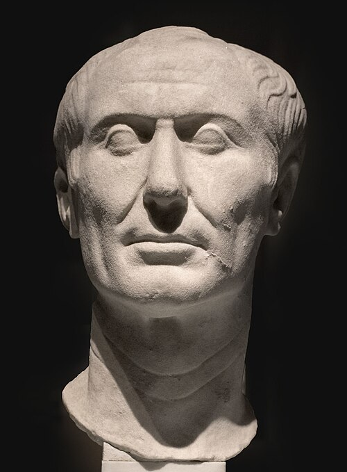 | Julius Caesar CH03-BCE01-01 | Retrato de Julio César (26724093101) (cropped).jpg | Ángel M. Felicísimo from Mérida, España | Public domain | Chân dung Julius Caesar, Retrato de Julio César (26724093101) (cropped) (tưởng tượng). Ảnh: Wikimedia Commons, Public domain. |
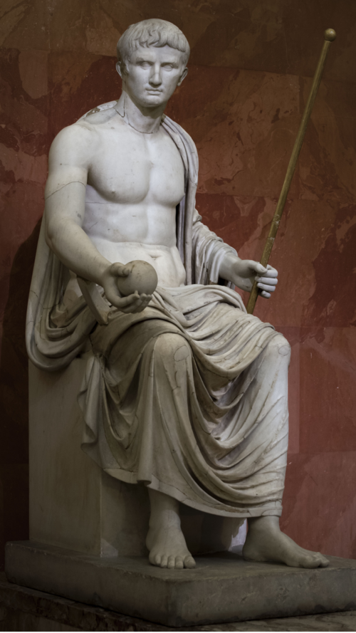 | Augustus CH03-BCE01-02 | Statue of the Emperor Octavian Augustus as Jupiter (6).png | С. И. Сосновский | CC BY-SA 4.0 ghi công bắt buộc | Chân dung Augustus (tưởng tượng). Ảnh: Wikimedia Commons, CC BY-SA 4.0. |
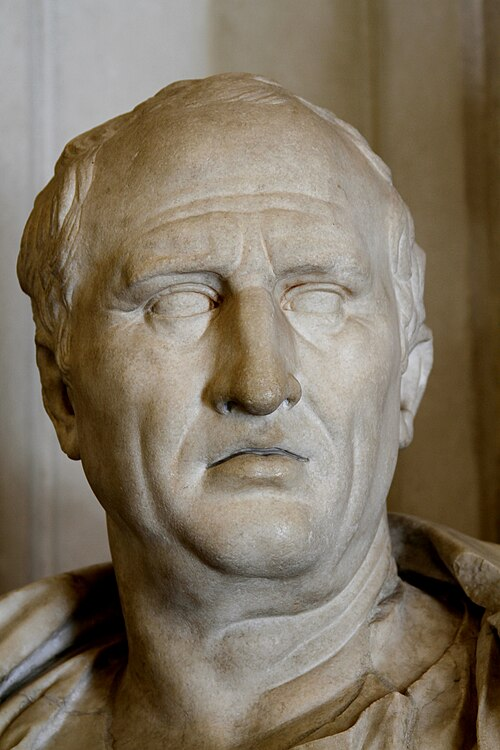 | Cicero CH03-BCE01-03 | Bust of Cicero (1st-cent. BC) - Palazzo Nuovo - Musei Capitolini - Rome 2016.jpg | José Luiz | CC BY-SA 4.0 ghi công bắt buộc | Chân dung Cicero (tưởng tượng). Ảnh: Wikimedia Commons, CC BY-SA 4.0. |
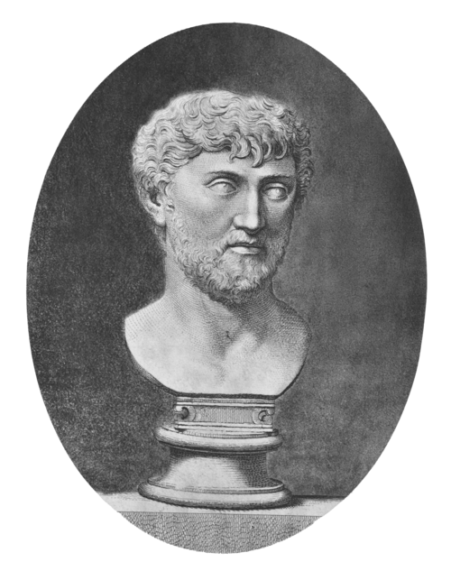 | Lucretius CH03-BCE01-04 | Lucretius1.png | Unknown author Unknown author | CC0 | Chân dung Lucretius (tưởng tượng). Ảnh: Wikimedia Commons, CC0. |
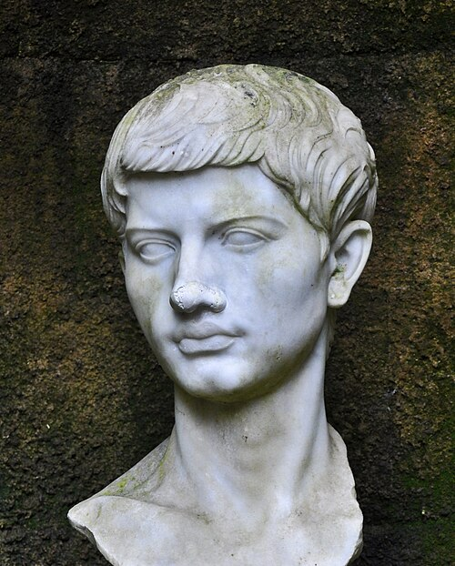 | Virgil CH03-BCE01-05 | Parco della Grotta di Posillipo5 (crop).jpg | Armando Mancini | Public domain | Chân dung Virgil, Parco della Grotta di Posillipo5 (crop) (tưởng tượng). Ảnh: Wikimedia Commons, Public domain. |
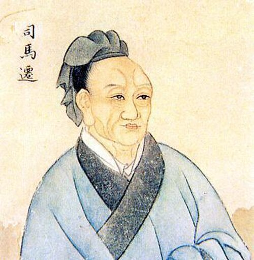 | Tư Mã Thiên CH03-BCE01-06 | Si maqian.jpg | scan from 《社会历史博物馆》 ISBN 7-5347-1397-8 | Public domain | Chân dung Tư Mã Thiên, Si maqian (tưởng tượng). Ảnh: Wikimedia Commons, Public domain. |
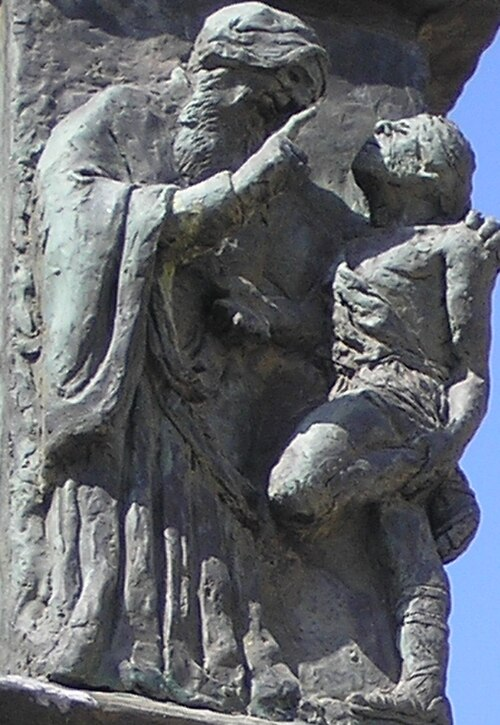 | Hillel Trưởng lão CH03-BCE01-07 | Knesset Menorah P5200009 Hilel.JPG | Deror avi | CC BY-SA 3.0 ghi công bắt buộc | Chân dung Hillel Trưởng lão, Knesset Menorah P5200009 Hilel (tưởng tượng). Ảnh: Wikimedia Commons, CC BY-SA 3.0. |
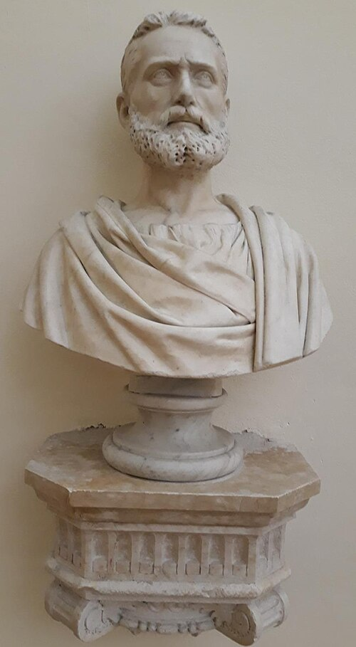 | Vitruvius CH03-BCE01-08 | Busto di Vitruvio.jpg | Mikceo | CC BY-SA 4.0 ghi công bắt buộc | Chân dung Vitruvius, Busto di Vitruvio (tưởng tượng). Ảnh: Wikimedia Commons, CC BY-SA 4.0. |
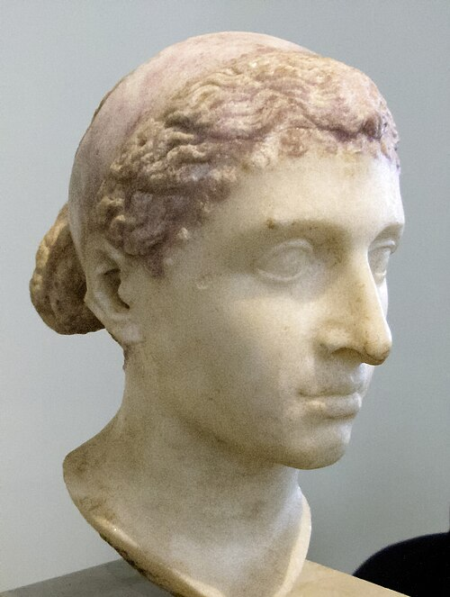 | Cleopatra VII CH03-BCE01-09 | Kleopatra-VII.-Altes-Museum-Berlin1.jpg | Louis le Grand | Public domain | Chân dung Cleopatra VII, Kleopatra-VII.-Altes-Museum-Berlin1 (tưởng tượng). Ảnh: Wikimedia Commons, Public domain. |
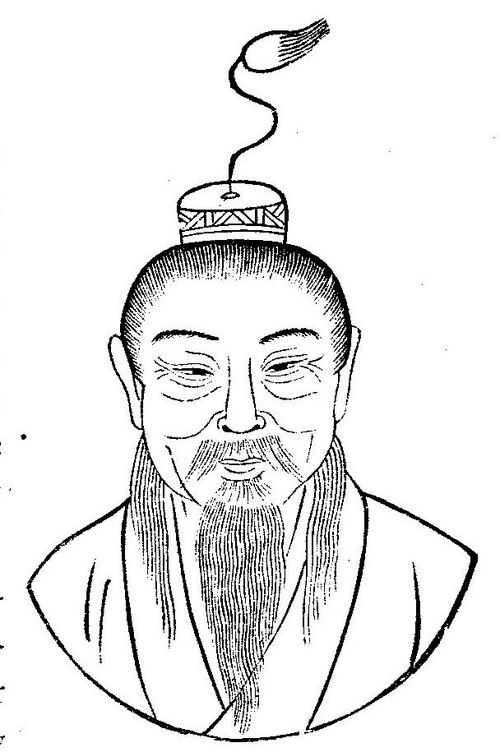 | Lưu Hướng CH03-BCE01-10 | Liu Xiang (Han scholar).PNG | User:Guss | Public domain | Chân dung Lưu Hướng, Liu Xiang (Han scholar) (tưởng tượng). Ảnh: Wikimedia Commons, Public domain. |
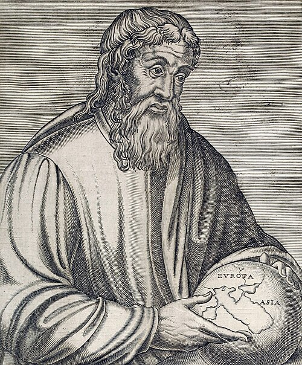 | Strabo CH03-BCE01-11 | Strabo.jpg | André Thévet | Public domain | Chân dung Strabo, 1584 (tưởng tượng). Ảnh: Wikimedia Commons, Public domain. |
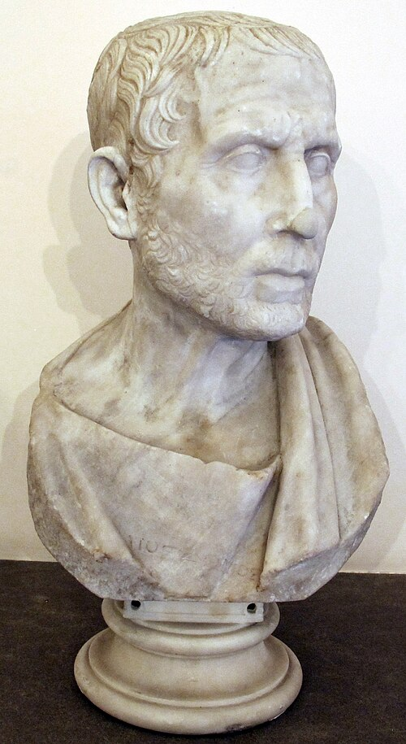 | Posidonius CH03-BCE01-12 | Posidonio, replica augustea (23 ac.-14 dc ca) da originale del 100-50 ac. ca. 6142.JPG | Sailko | CC BY 3.0 ghi công bắt buộc | Chân dung Posidonius (tưởng tượng). Ảnh: Wikimedia Commons, CC BY 3.0. |
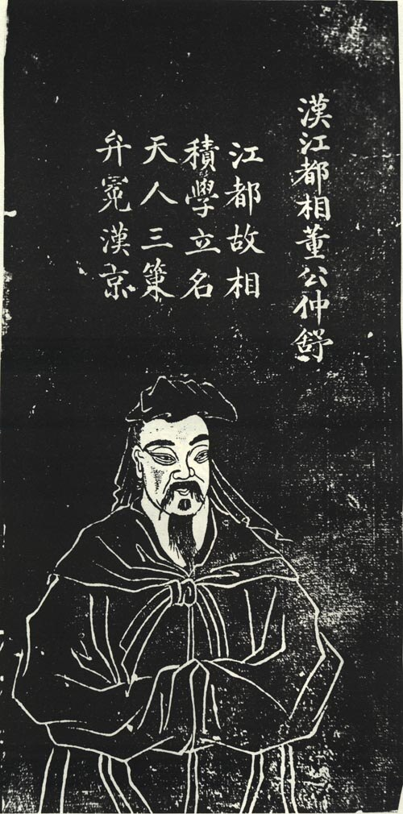 | Đổng Trọng Thư CH03-BCE02-01 | Dong zhongshu.jpg | 孔继尧 | Public domain | Chân dung Đổng Trọng Thư, Dong zhongshu (tưởng tượng). Ảnh: Wikimedia Commons, Public domain. |
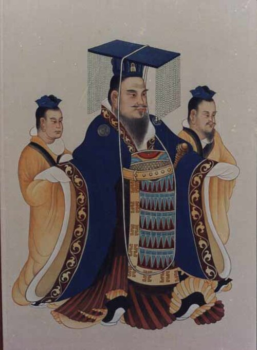 | Hán Vũ Đế CH03-BCE02-02 | 漢武帝.jpg | Unknown author Unknown author | Public domain | Chân dung Hán Vũ Đế, 漢武帝 (tưởng tượng). Ảnh: Wikimedia Commons, Public domain. |
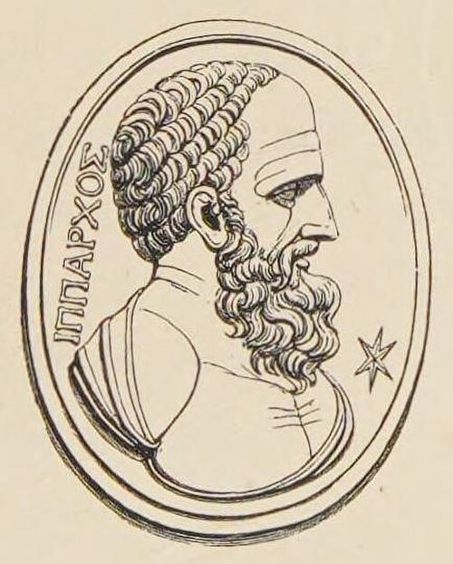 | Hipparchus xứ Nicaea CH03-BCE02-03 | Head of Hipparchus (cropped).jpg | William Henry Smyth | Public domain | Chân dung Hipparchus xứ Nicaea, Head of Hipparchus (cropped) (tưởng tượng). Ảnh: Wikimedia Commons, Public domain. |
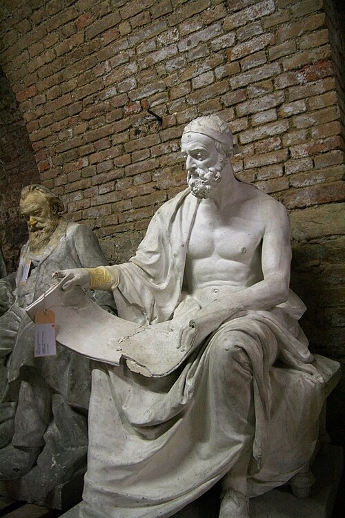 | Polybius CH03-BCE02-04 | Gipsmodelle Wiener Historismus Hofburg-Keller 2012 33 Alois Düll, Polybios.jpg | Manfred Werner - Tsui | CC BY-SA 3.0 ghi công bắt buộc | Chân dung Polybius, Gipsmodelle Wiener Historismus Hofburg-Keller 2012 33 Alois Düll, Polybios (tưởng tượng). Ảnh: Wikimedia Commons, CC BY-SA 3.0. |
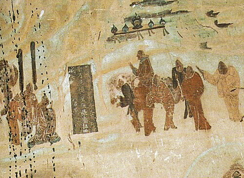 | Trương Khiên CH03-BCE02-05 | ZhangQianTravels.jpg | PHG | Public domain | Chân dung Trương Khiên, ZhangQianTravels (tưởng tượng). Ảnh: Wikimedia Commons, Public domain. |
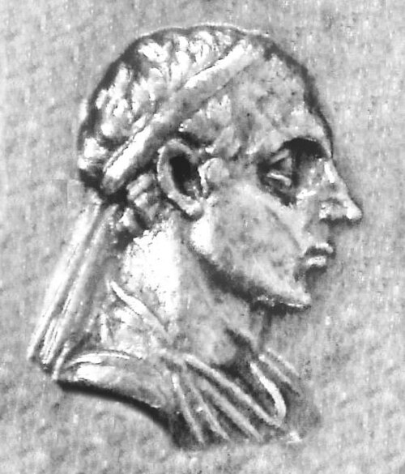 | Menandros I CH03-BCE02-07 | Menander portrait.jpg | World Imaging | CC BY-SA 4.0 ghi công bắt buộc | Chân dung Menandros I, Menander portrait (tưởng tượng). Ảnh: Wikimedia Commons, CC BY-SA 4.0. |
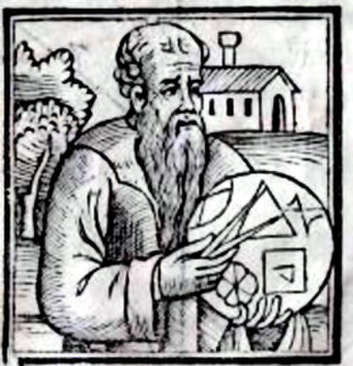 | Apollonius xứ Perga CH03-BCE02-08 | Apollonii Pergei Opera 1537 detail.jpg | Giovanni Battista Memo | Public domain | Chân dung Apollonius xứ Perga, Apollonii Pergei Opera 1537 detail, 1537 (tưởng tượng). Ảnh: Wikimedia Commons, Public domain. |
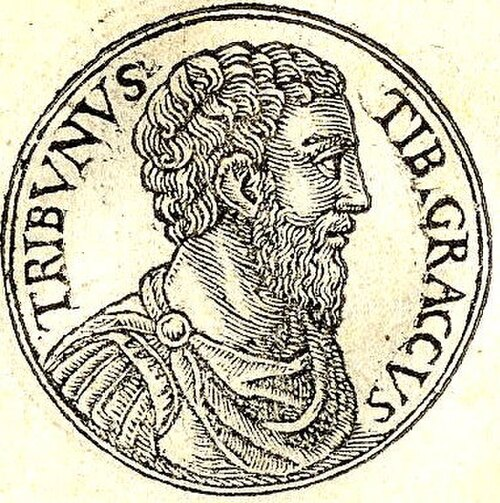 | Tiberius Gracchus CH03-BCE02-09 | Tiberius Gracchus.jpg | Published by Guillaume Rouille (1518?-1589) | Public domain | Chân dung Tiberius Gracchus, 1553 (tưởng tượng). Ảnh: Wikimedia Commons, Public domain. |
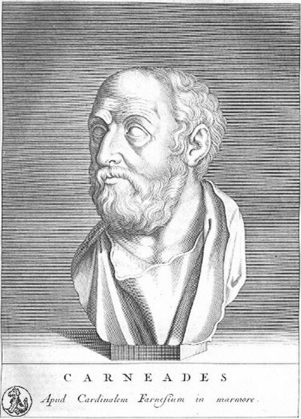 | Carneades xứ Cyrene CH03-BCE02-10 | Carneades.jpg | Unidentified engraver | Public domain | Chân dung Carneades xứ Cyrene, Carneades (tưởng tượng). Ảnh: Wikimedia Commons, Public domain. |
| Judah Maccabee CH03-BCE02-11 | Judas Maccabeus medal.svg | Georges Reverdy | Public domain | Chân dung Judah Maccabee, Judas Maccabeus medal, 1553 (tưởng tượng). Ảnh: Wikimedia Commons, Public domain. | |
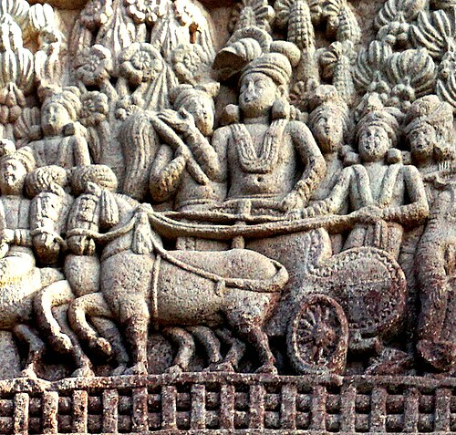 | Ashoka CH03-BCE03-01 | Ashoka's visit to the Ramagrama stupa Sanchi Stupa 1 Southern gateway.jpg | Photo Dharma from Sadao, Thailand | CC BY 2.0 ghi công bắt buộc | Chân dung Ashoka (tưởng tượng). Ảnh: Wikimedia Commons, CC BY 2.0. |
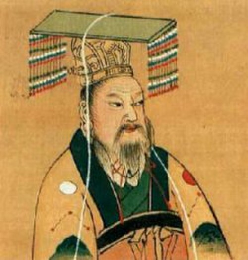 | Tần Thủy Hoàng CH03-BCE03-02 | Qinshihuangdi3.jpg | — | Public domain | Chân dung Tần Thủy Hoàng, Qinshihuangdi3 (tưởng tượng). Ảnh: Wikimedia Commons, Public domain. |
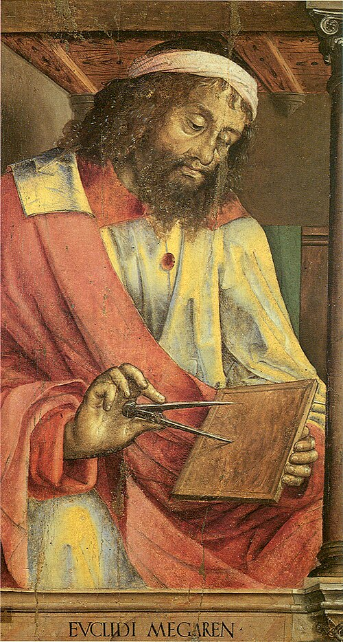 | Euclid CH03-BCE03-03 | Euklid2.jpg | Justus van Gent | Public domain | Chân dung Euclid, Euklid2, khoảng 1474 (tưởng tượng). Ảnh: Wikimedia Commons, Public domain. |
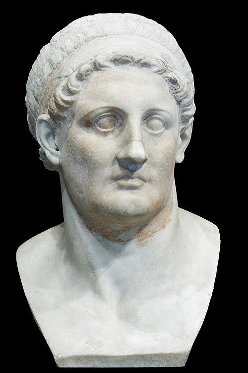 | Ptolemaios I Soter CH03-BCE03-04 | Ptolemy I Soter Louvre Ma849 A.jpg | Marie-Lan Nguyen | Public domain | Chân dung Ptolemaios I Soter, Ptolemy I Soter Louvre Ma849 A (tưởng tượng). Ảnh: Wikimedia Commons, Public domain. |
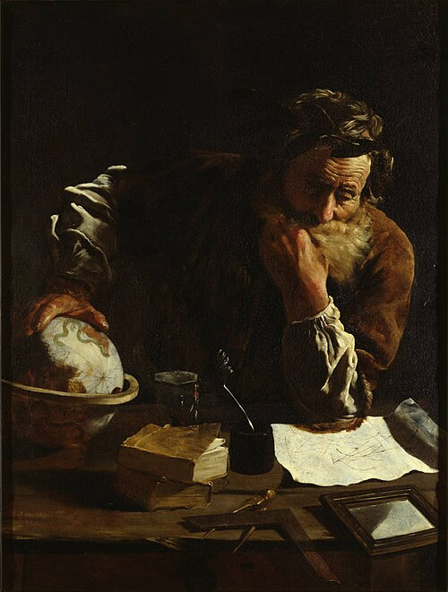 | Archimedes CH03-BCE03-05 | Retrato de un erudito (¿Arquímedes?), por Domenico Fetti.jpg | Domenico Fetti | Public domain | Chân dung Archimedes, khoảng 1620 (tưởng tượng). Ảnh: Wikimedia Commons, Public domain. |
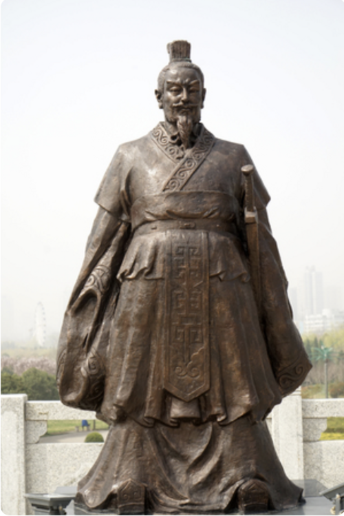 | Hàn Phi CH03-BCE03-06 | Statue Of Han Fei.png | Sabinowitz | CC BY-SA 4.0 ghi công bắt buộc | Chân dung Hàn Phi, Statue Of Han Fei (tưởng tượng). Ảnh: Wikimedia Commons, CC BY-SA 4.0. |
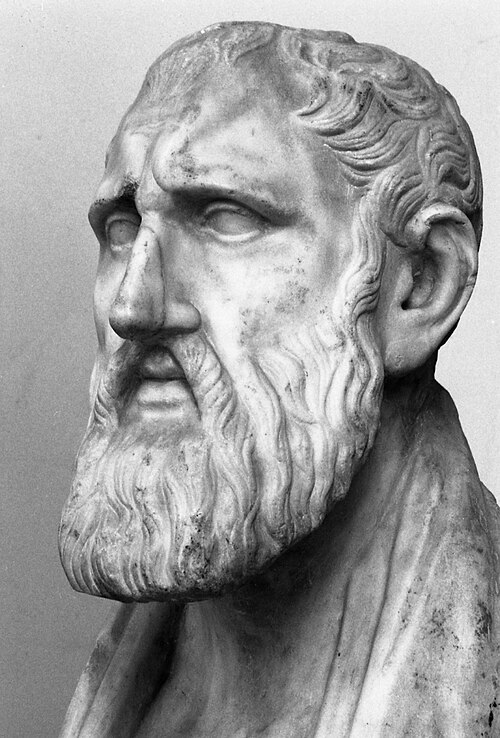 | Zeno xứ Citium CH03-BCE03-07 | Paolo Monti - Servizio fotografico (Napoli, 1969) - BEIC 6353768.jpg | Paolo Monti | CC BY-SA 4.0 ghi công bắt buộc | Chân dung Zeno xứ Citium, Servizio fotografico (Napoli, 1969) (tưởng tượng). Ảnh: Wikimedia Commons, CC BY-SA 4.0. |
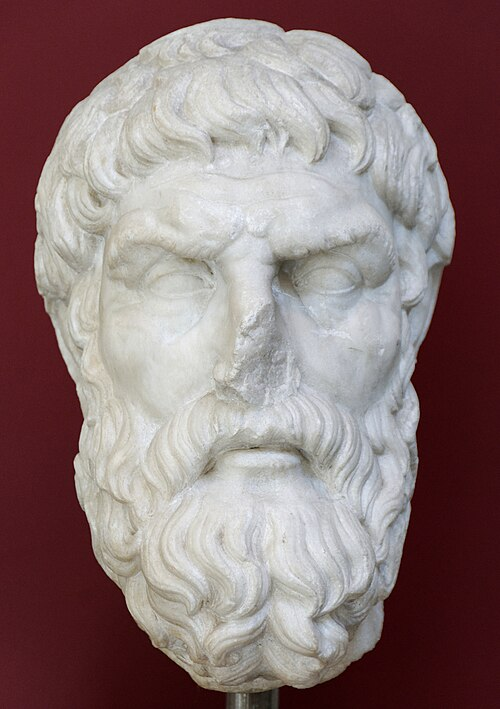 | Epicurus CH03-BCE03-08 | Epicurus Massimo Inv197306.jpg | Marie-Lan Nguyen (2010) | Public domain | Chân dung Epicurus (tưởng tượng). Ảnh: Wikimedia Commons, Public domain. |
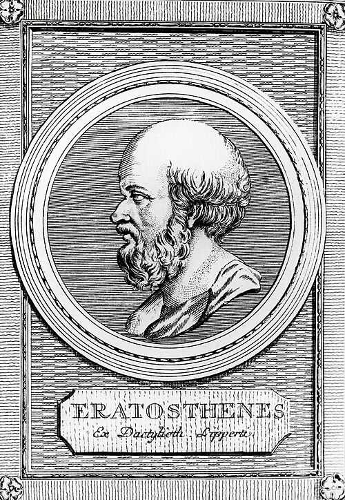 | Eratosthenes CH03-BCE03-09 | Eratosthenes.jpg | — | Public domain | Chân dung Eratosthenes (tưởng tượng). Ảnh: Wikimedia Commons, Public domain. |
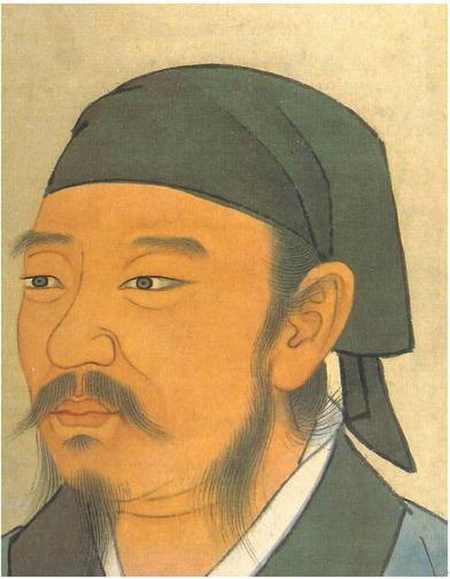 | Tuân Tử CH03-BCE03-11 | Portrait of Xun Zi.jpg | Unknown author Unknown author | Public domain | Chân dung Tuân Tử, Chinese: 《歷代聖賢名人像-战国时楚兰陵令荀况》 label QS:Lzh,"歷代聖賢名人像-战国时楚兰陵令荀况" (tưởng tượng). Ảnh: Wikimedia Commons, Public domain. |
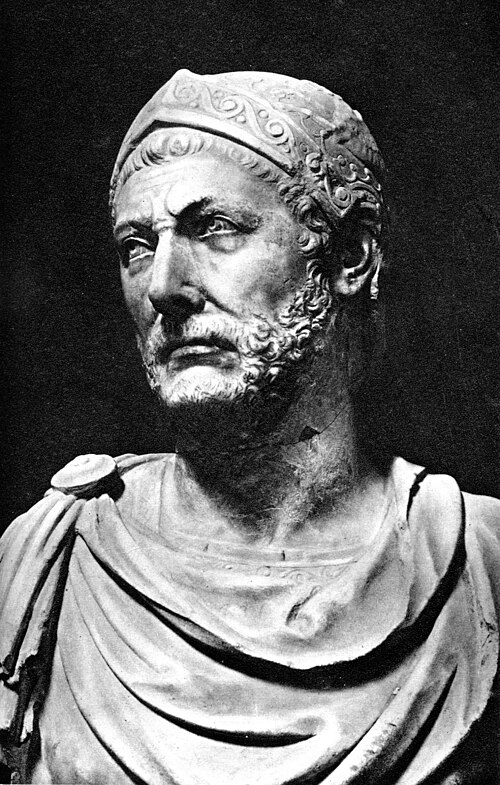 | Hannibal Barca CH03-BCE03-12 | Mommsen p265.jpg | Fratelli Alinari | Public domain | Chân dung Hannibal Barca, Mommsen p265 (tưởng tượng). Ảnh: Wikimedia Commons, Public domain. |
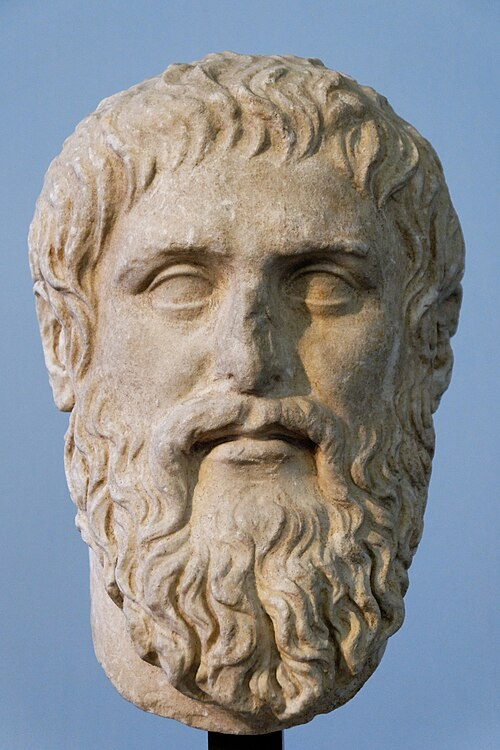 | Plato CH03-BCE04-01 | Plato Silanion Musei Capitolini MC1377.jpg | Marie-Lan Nguyen | CC BY 2.5 ghi công bắt buộc | Chân dung Plato (tưởng tượng). Ảnh: Wikimedia Commons, CC BY 2.5. |
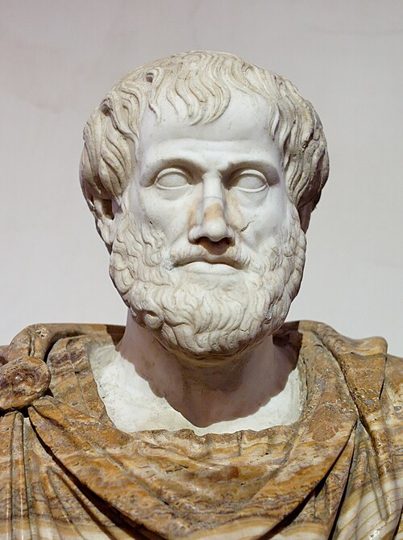 | Aristotle CH03-BCE04-02 | Aristotle Altemps Inv8575.jpg | After Lysippos | Public domain | Chân dung Aristotle, khoảng 330 TCN. Ảnh: Wikimedia Commons, Public domain. |
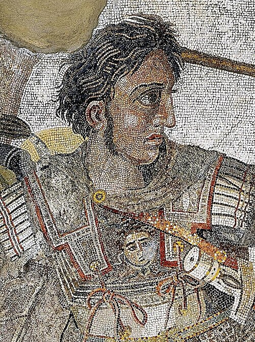 | Alexander Đại đế CH03-BCE04-03 | Alexander the Great mosaic (cropped).jpg | Unknown author Unknown author | Public domain | Chân dung Alexander Đại đế, Alexander the Great mosaic (cropped), khoảng 100 TCN (tưởng tượng). Ảnh: Wikimedia Commons, Public domain. |
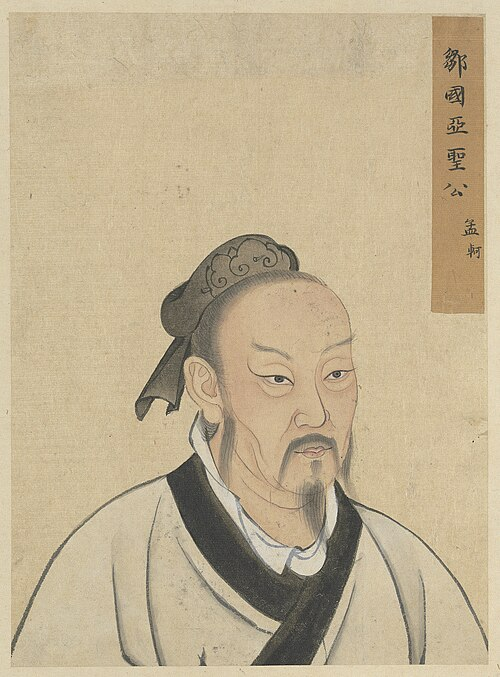 | Mạnh Tử CH03-BCE04-04 | Half Portraits of the Great Sage and Virtuous Men of Old - Meng Ke (孟軻).jpg | anonymous | Public domain | Chân dung Mạnh Tử, Half Portraits of the Great Sage and Virtuous Men of Old 至聖先賢半身像, khoảng 1279–1368 (tưởng tượng). Ảnh: Wikimedia Commons, Public domain. |
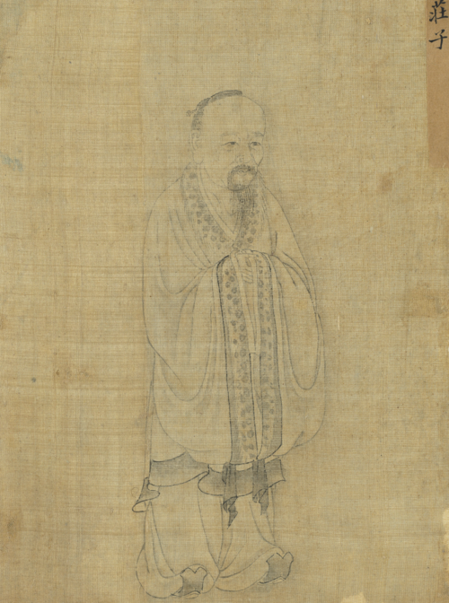 | Trang Tử CH03-BCE04-05 | Zhuangzi.png | Unknown author Unknown author | Public domain | Chân dung Trang Tử, Zhuangzi (tưởng tượng). Ảnh: Wikimedia Commons, Public domain. |
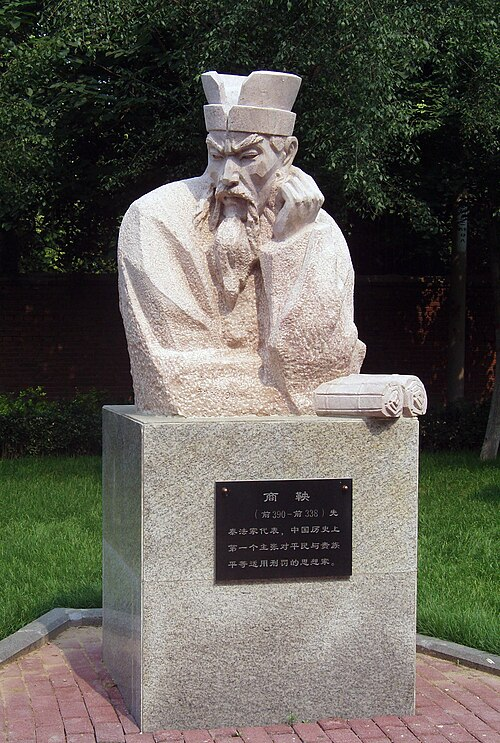 | Thương Ưởng CH03-BCE04-06 | Statue of Shang Yang.jpg | Taken by Fanghong | CC BY 2.5 ghi công bắt buộc | Chân dung Thương Ưởng, Statue of Shang Yang (tưởng tượng). Ảnh: Wikimedia Commons, CC BY 2.5. |
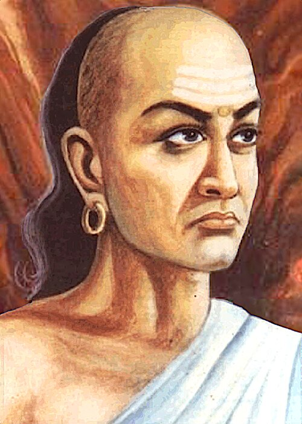 | Kauṭilya CH03-BCE04-07 | Chanakya artistic depiction.jpg | Unknown author Unknown author | Public domain | Chân dung Kauṭilya, Chanakya artistic depiction (tưởng tượng). Ảnh: Wikimedia Commons, Public domain. |
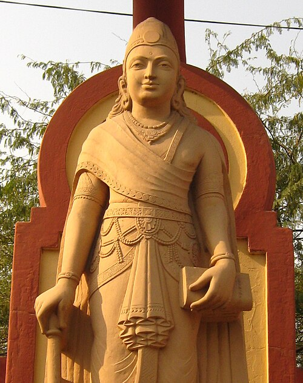 | Chandragupta Maurya CH03-BCE04-08 | Chandragupt maurya Birla mandir 6 dec 2009 (31) (cropped).JPG | आशीष भटनागर at Hindi Wikipedia | Public domain | Chân dung Chandragupta Maurya, Chandragupt maurya Birla mandir 6 dec 2009 (31) (cropped) (tưởng tượng). Ảnh: Wikimedia Commons, Public domain. |
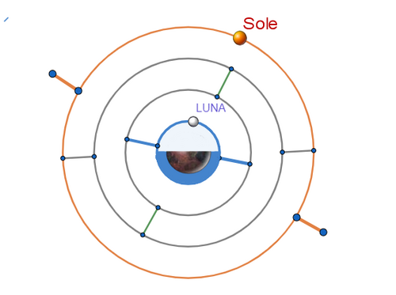 | Eudoxus xứ Cnidus CH03-BCE04-09 | Eudoxus of Cnidus homocentric spheres model.png | Cosmosanchez | CC BY-SA 4.0 ghi công bắt buộc | Chân dung Eudoxus xứ Cnidus, Eudoxus of Cnidus homocentric spheres model (tưởng tượng). Ảnh: Wikimedia Commons, CC BY-SA 4.0. |
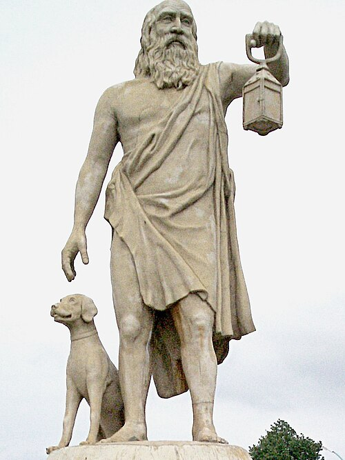 | Diogenes xứ Sinope CH03-BCE04-10 | Diogenes-statue-Sinop-enhanced.jpg | Diogenes-statue-Sinop.JPG : Tony f derivative work: Singinglemon ( talk ) | CC BY 3.0 ghi công bắt buộc | Chân dung Diogenes xứ Sinope, Diogenes-statue-Sinop-enhanced (tưởng tượng). Ảnh: Wikimedia Commons, CC BY 3.0. |
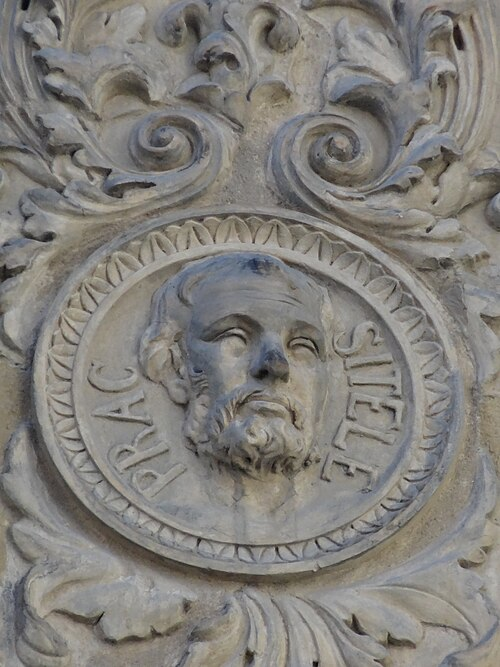 | Praxiteles CH03-BCE04-11 | Edifici carrer Tallers 45 Barcelona - 03 Praxiteles.JPG | Jordiferrer | CC BY-SA 3.0 ghi công bắt buộc | Chân dung Praxiteles (tưởng tượng). Ảnh: Wikimedia Commons, CC BY-SA 3.0. |
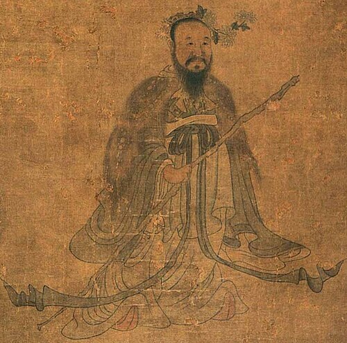 | Khuất Nguyên CH03-BCE04-12 | Qu Yuan Chen Hongshou 2.jpg | Chen Hongshou | Public domain | Chân dung Khuất Nguyên, khoảng 1598–1652 (tưởng tượng). Ảnh: Wikimedia Commons, Public domain. |
 | Giê-su thành Nazareth CH04-CE01-01 | Spas vsederzhitel sinay (cropped1).jpg | Unknown artist Unknown artist | Public domain | Chân dung Giê-su thành Nazareth, Spas vsederzhitel sinay (cropped1), thế kỷ 6 (tưởng tượng). Ảnh: Wikimedia Commons, Public domain. |
 | Phaolô thành Tarsus CH04-CE01-02 | Giovanni Francesco Barbieri - Saint Paul.jpg | Guercino | Public domain | Chân dung Phaolô thành Tarsus, Saint Paul label QS:Len,"Saint Paul" (tưởng tượng). Ảnh: Wikimedia Commons, Public domain. |
 | Hán Quang Vũ Đế CH04-CE01-04 | Han Guangwu Di (cropped1to1) (cropped).jpg | Yan Li-pen | Public domain | Chân dung Hán Quang Vũ Đế, Thirteen Emperors Scroll (detail), thế kỷ 7 (tưởng tượng). Ảnh: Wikimedia Commons, Public domain. |
 | Seneca CH04-CE01-05 | Duble herma of Socrates and Seneca Antikensammlung Berlin 07.jpg | Calidius | CC BY-SA 3.0 ghi công bắt buộc | Chân dung Seneca (tưởng tượng). Ảnh: Wikimedia Commons, CC BY-SA 3.0. |
 | Philo xứ Alexandria CH04-CE01-06 | PhiloThevet.jpg | André Thévet | Public domain | Chân dung Philo xứ Alexandria, PhiloThevet, 1584 (tưởng tượng). Ảnh: Wikimedia Commons, Public domain. |
 | Pliny Cả CH04-CE01-07 | Grande Illustrazione del Lombardo Veneto Vol 3 Plinio Secondo 300dpi.jpg | Geoffrey | Public domain | Chân dung Pliny Cả, Grande Illustrazione del Lombardo Veneto Vol 3 Plinio Secondo 300dpi (tưởng tượng). Ảnh: Wikimedia Commons, Public domain. |
 | Dioscorides CH04-CE01-08 | Illuminated Manuscripts (Middleton) figure07.jpg | J. Henry Middleton | Public domain | Chân dung Dioscorides, Illuminated Manuscripts (Middleton) figure07 (tưởng tượng). Ảnh: Wikimedia Commons, Public domain. |
 | Josephus CH04-CE01-09 | Portret van Flavius Josephus, RP-P-1906-2507.jpg | Rijksmuseum | CC0 | Chân dung Josephus, 1736 (tưởng tượng). Ảnh: Wikimedia Commons, CC0. |
 | Ban Cố CH04-CE01-11 | Ban Gu.jpg | — | Public domain | Chân dung Ban Cố, Ban Gu (tưởng tượng). Ảnh: Wikimedia Commons, Public domain. |
 | Ban Chiêu CH04-CE01-12 | Banzhao.jpg | "Pan-hoei-pan, Femme savante" published in the China volume of L'Univers ..., about 1847. Reproduced online at http://www.ancestryimages.com/proddetail.php?prod=g6393 . | Public domain | Chân dung Ban Chiêu, Banzhao (tưởng tượng). Ảnh: Wikimedia Commons, Public domain. |
 | Thái Luân CH04-CE02-01 | Cai-lun.jpg | Unknown author Unknown author | Public domain | Chân dung Thái Luân, Cai-lun, thế kỷ 18 (tưởng tượng). Ảnh: Wikimedia Commons, Public domain. |
 | Kanishka CH04-CE02-03 | KanishkaCoin3.JPG | No machine-readable author provided. World Imaging assumed (based on copyright claims). | Public domain | Chân dung Kanishka (tưởng tượng). Ảnh: Wikimedia Commons, Public domain. |
 | Aśvaghoṣa CH04-CE02-04 | Ashvaghosha.jpg | Unknown author Unknown author | Public domain | Chân dung Aśvaghoṣa, Ashvaghosha (tưởng tượng). Ảnh: Wikimedia Commons, Public domain. |
 | Claudius Ptolemy CH04-CE02-05 | PSM V78 D326 Ptolemy.png | Unknown author Unknown author | Public domain | Chân dung Claudius Ptolemy, PSM V78 D326 Ptolemy, 1584 (tưởng tượng). Ảnh: Wikimedia Commons, Public domain. |
 | Galen CH04-CE02-06 | Galenus.jpg | Georg Paul Busch (engraver) | Public domain | Chân dung Galen, thế kỷ 18 (tưởng tượng). Ảnh: Wikimedia Commons, Public domain. |
 | Marcus Aurelius CH04-CE02-07 | Marcus Aurelius Louvre MR561 n02.jpg | Marie-Lan Nguyen (2011) | CC BY 2.5 ghi công bắt buộc | Chân dung Marcus Aurelius, khoảng 161. Ảnh: Wikimedia Commons, CC BY 2.5. |
 | Irenaeus thành Lyon CH04-CE02-09 | Saint Irenaeus.jpg | Unknown author Unknown author | Public domain | Chân dung Irenaeus thành Lyon, Saint Irenaeus, thế kỷ 4 (tưởng tượng). Ảnh: Wikimedia Commons, Public domain. |
 | Tertullian CH04-CE02-10 | Tertullian2.png | André Thevet | Public domain | Chân dung Tertullian, 1584 (tưởng tượng). Ảnh: Wikimedia Commons, Public domain. |
 | Trương Trọng Cảnh CH04-CE02-11 | Chinese woodcut, Famous medical figures; Zhang Zhongjing Wellcome L0039319.jpg | Gan Bozong (Tang period, 618-907) | CC BY 4.0 ghi công bắt buộc | Chân dung Trương Trọng Cảnh, Chinese woodcut, Famous medical figures: Zhang Zhongjing (tưởng tượng). Ảnh: Wikimedia Commons, CC BY 4.0. |
 | Trương Đạo Lăng CH04-CE02-12 | Zhang Daoling.jpg | Werner, E. T. C. (1864-1954) | Public domain | Chân dung Trương Đạo Lăng, Zhang Daoling (tưởng tượng). Ảnh: Wikimedia Commons, Public domain. |
 | Plotinus CH04-CE03-01 | Paolo Monti - Servizio fotografico (Roma, 1969) - BEIC 6353762.jpg | Paolo Monti | CC BY-SA 4.0 ghi công bắt buộc | Chân dung Plotinus, Servizio fotografico (Roma, 1969) (tưởng tượng). Ảnh: Wikimedia Commons, CC BY-SA 4.0. |
 | Origen CH04-CE03-02 | Origen3.jpg | — | Public domain | Chân dung Origen (tưởng tượng). Ảnh: Wikimedia Commons, Public domain. |
 | Porphyry xứ Tyre CH04-CE03-03 | Portrait of Porphyry of Tyre from Les vrais pourtraits et vies des hommes illustres grecz, latins et payens.jpg | Unknown author Unknown author | Public domain | Chân dung Porphyry xứ Tyre, 1584 (tưởng tượng). Ảnh: Wikimedia Commons, Public domain. |
 | Mani CH04-CE03-04 | Mani, the prophet.jpg | Mladifilozof | Public domain | Chân dung Mani (tưởng tượng). Ảnh: Wikimedia Commons, Public domain. |
 | Ardashir I CH04-CE03-05 | Dinar of Ardashir I (cropped).jpg | Unknown author Unknown author | Public domain | Chân dung Ardashir I, 205. Ảnh: Wikimedia Commons, Public domain. |
 | Shapur I CH04-CE03-06 | The triumph of Shapur I over the Roman emperors Valerian and Philip the Arab (detail), Naqsh-e Rostam, Iran (48098809022).jpg | Carole Raddato from Frankfurt, Germany | CC BY-SA 2.0 ghi công bắt buộc | Chân dung Shapur I (tưởng tượng). Ảnh: Wikimedia Commons, CC BY-SA 2.0. |
 | Diophantus xứ Alexandria CH04-CE03-08 | Διόφαντος - Diophantos - ДИОФАНТ.jpg | Unknown author Unknown author | Public domain | Chân dung Diophantus xứ Alexandria, Διόφαντος - Diophantos - ДИОФАНТ (tưởng tượng). Ảnh: Wikimedia Commons, Public domain. |
 | Lưu Huy CH04-CE03-09 | Hunan International Economics University20.jpg | Uploaded by Huangdan2060 | CC BY 3.0 ghi công bắt buộc | Chân dung Lưu Huy, Hunan International Economics University20 (tưởng tượng). Ảnh: Wikimedia Commons, CC BY 3.0. |
 | Vương Bật CH04-CE03-10 | 至聖先賢半身像 冊-107-王弼.jpg | Anonymous Unknown author | Public domain | Chân dung Vương Bật, 至聖先賢半身像 冊-107-王弼, khoảng 1271–1368 (tưởng tượng). Ảnh: Wikimedia Commons, Public domain. |
 | Gia Cát Lượng CH04-CE03-11 | 蜀汉丞相忠武侯诸葛亮.jpg | Unknown author Unknown author | Public domain | Chân dung Gia Cát Lượng, Chinese: 《歷代聖賢名人像-蜀汉丞相忠武侯诸葛亮》 label QS:Lzh,"歷代聖賢名人像-蜀汉丞相忠武侯诸葛亮" (tưởng tượng). Ảnh: Wikimedia Commons, Public domain. |
 | Āryadeva CH04-CE03-12 | Arjadeva.jpg | Rartat | Public domain | Chân dung Āryadeva, Arjadeva (tưởng tượng). Ảnh: Wikimedia Commons, Public domain. |
 | Constantinus I CH04-CE04-01 | Rome-Capitole-StatueConstantin.jpg | Jean-Christophe BENOIST | CC BY 2.5 ghi công bắt buộc | Chân dung Constantinus I, Rome-Capitole-StatueConstantin (tưởng tượng). Ảnh: Wikimedia Commons, CC BY 2.5. |
 | Athanasius thành Alexandria CH04-CE04-02 | Ikone Athanasius von Alexandria.jpg | — | Public domain | Chân dung Athanasius thành Alexandria, Ikone Athanasius von Alexandria (tưởng tượng). Ảnh: Wikimedia Commons, Public domain. |
 | Wulfila CH04-CE04-03 | Wulfila translating the Bible, illustration 1879 - Wulfila übersetzt die Bibel, Illustration von 1879.jpg | Wilhelm von Lindenschmit der Jüngere (1829 - 1895) | Public domain | Chân dung Wulfila (tưởng tượng). Ảnh: Wikimedia Commons, Public domain. |
 | Julianus CH04-CE04-04 | Gold Solidus of Julian the Apostate, Sirmium.jpg | ANS | CC BY-SA 4.0 ghi công bắt buộc | Chân dung Julianus, Gold Solidus of Julian the Apostate, Sirmium, 361. Ảnh: Wikimedia Commons, CC BY-SA 4.0. |
 | Shapur II CH04-CE04-05 | Bust of Shapur II the Great in the Metropolitan Museum of Art.jpg | This file was donated to Wikimedia Commons as part of a project by the Metropolitan Museum of Art . See the Image and Data Resources Open Access Policy | CC0 | Chân dung Shapur II, Head of a king, thế kỷ 4. Ảnh: Wikimedia Commons, CC0. |
 | Vương Hi Chi CH04-CE04-07 | Portraits of Famous Men - Wang Xizhi (cropped).jpg | Unknown Chinese artist | Public domain | Chân dung Vương Hi Chi, Portraits of Famous Men: Wang Xizhi (tưởng tượng). Ảnh: Wikimedia Commons, Public domain. |
 | Theodosius I CH04-CE04-08 | Theodosius1cng11100822obverse.jpg | Classical Numismatic Group | CC BY-SA 2.5 ghi công bắt buộc | Chân dung Theodosius I, Theodosius1cng11100822obverse (tưởng tượng). Ảnh: Wikimedia Commons, CC BY-SA 2.5. |
 | Ezana xứ Aksum CH04-CE04-09 | ChandraguptaIIOnHorse.jpg | PHGCOM | CC BY-SA 3.0 ghi công bắt buộc | Chân dung Chandragupta II, ChandraguptaIIOnHorse (tưởng tượng). Ảnh: Wikimedia Commons, CC BY-SA 3.0. |
 | Asaṅga CH04-CE04-10 | Mujaku Asanga Kofukuji.JPG | sculptor: UNKEI, 13th century, photo: Shihachi Fujimoto(family name)), (1911, IIDA,NAGANO, Japan - 2006,Otaru, Hokkaido, Japan ) a renowned Japanese photographer | Public domain | Chân dung Asaṅga (tưởng tượng). Ảnh: Wikimedia Commons, Public domain. |
 | Vasubandhu CH04-CE04-11 | Vasubandhu.JPG | — | Public domain | Chân dung Vasubandhu (tưởng tượng). Ảnh: Wikimedia Commons, Public domain. |
 | Pháp Hiển CH04-CE04-12 | Faxian statue in Maritime Experiential Museum & Aquarium Singapore.jpg | Ms Sarah Welch | CC0 | Chân dung Pháp Hiển, Faxian statue in Maritime Experiential Museum & Aquarium Singapore (tưởng tượng). Ảnh: Wikimedia Commons, CC0. |
 | Augustinô thành Hippo CH04-CE05-01 | Saint Augustine by Philippe de Champaigne.jpg | Philippe de Champaigne | Public domain | Chân dung Augustinô thành Hippo, Saint Augustine Alternative title: Saint Augustin, khoảng 1645 (tưởng tượng). Ảnh: Wikimedia Commons, Public domain. |
 | Giáo hoàng Lêô I CH04-CE05-02 | Herrera mozo San León magno Lienzo. Óvalo. 164 x 105 cm. Museo del Prado.png | Francisco Herrera the Younger | Public domain | Chân dung Giáo hoàng Lêô I, El papa San León I Magno, thế kỷ 17 (tưởng tượng). Ảnh: Wikimedia Commons, Public domain. |
 | Proclus CH04-CE05-03 | In primum Euclidis elementorum librum 01.jpg | Euclid Francesco Barozzi | Public domain | Chân dung Proclus, In primum Euclidis elementorum librum 01, 1560 (tưởng tượng). Ảnh: Wikimedia Commons, Public domain. |
 | Attila CH04-CE05-04 | Attila Hunnorum Rex Flagellum Dei Aquilejae Eversor Utini Instaurator.jpg | Julio Strozza | Public domain | Chân dung Attila (tưởng tượng). Ảnh: Wikimedia Commons, Public domain. |
 | Theodosius II CH04-CE05-05 | Theodosius II Louvre Ma1036.jpg | Marie-Lan Nguyen ( User:Jastrow ), 2009 | CC BY 2.5 ghi công bắt buộc | Chân dung Theodosius II (tưởng tượng). Ảnh: Wikimedia Commons, CC BY 2.5. |
 | Hypatia CH04-CE05-06 | Hipatia67.jpg | Elbert Hubbard (June 19, 1856 – May 7, 1915) | Public domain | Chân dung Hypatia, Hipatia67 (tưởng tượng). Ảnh: Wikimedia Commons, Public domain. |
 | Cưu-ma-la-thập CH04-CE05-07 | Kumarajiva at Kizil Caves, Kuqa (cropped).jpg | Yoshi Canopus | CC BY-SA 3.0 ghi công bắt buộc | Chân dung Cưu-ma-la-thập, Kumarajiva at Kizil Caves, Kuqa (cropped) (tưởng tượng). Ảnh: Wikimedia Commons, CC BY-SA 3.0. |
 | Āryabhaṭa CH04-CE05-09 | 2064 aryabhata-crp.jpg | Own work | Public domain | Chân dung Āryabhaṭa (tưởng tượng). Ảnh: Wikimedia Commons, Public domain. |
 | Tổ Xung Chi CH04-CE05-11 | 昆山亭林公园祖冲之像.jpg | Gisling | CC BY-SA 3.0 ghi công bắt buộc | Chân dung Tổ Xung Chi, 昆山亭林公园祖冲之像 (tưởng tượng). Ảnh: Wikimedia Commons, CC BY-SA 3.0. |
 | Bắc Nguỵ Hiếu Văn Đế CH04-CE05-12 | Emperor Xiaowen of Northern Wei.jpg | Original uploader was Jason22 at zh.wikipedia | Public domain | Chân dung Bắc Nguỵ Hiếu Văn Đế, Emperor Xiaowen of Northern Wei (tưởng tượng). Ảnh: Wikimedia Commons, Public domain. |
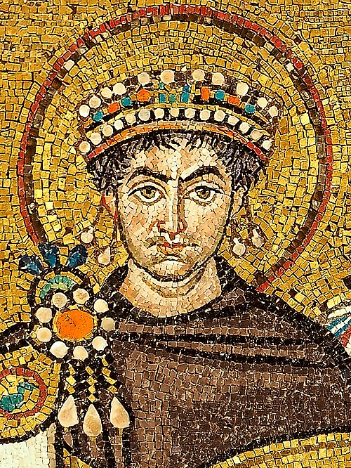 | Justinianus I CH05-CE06-01 | Mosaic of Justinianus I - Basilica San Vitale (Ravenna).jpg | Petar Milošević | CC BY-SA 4.0 ghi công bắt buộc | Chân dung Justinianus I (tưởng tượng). Ảnh: Wikimedia Commons, CC BY-SA 4.0. |
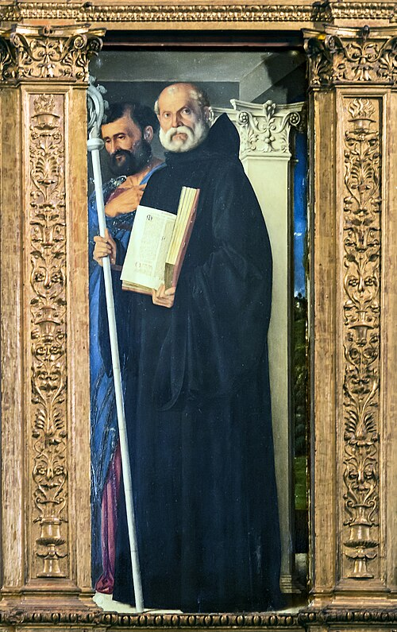 | Biển Đức thành Norcia CH05-CE06-02 | Frari (Venice) - Sacristy - triptych by Giovanni Bellini - Saint Benedict of Nursia and Saint Mark.jpg | Didier Descouens | CC BY-SA 4.0 ghi công bắt buộc | Chân dung Biển Đức thành Norcia (tưởng tượng). Ảnh: Wikimedia Commons, CC BY-SA 4.0. |
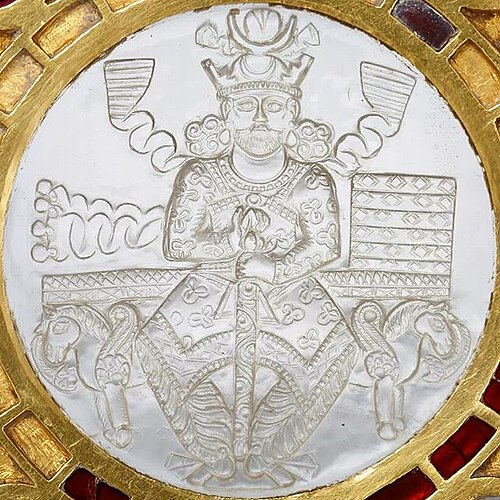 | Khosrow I CH05-CE06-03 | Plate of the Sasanian king Khosrow I Anushirvan.jpg | Own work | CC BY-SA 4.0 ghi công bắt buộc | Chân dung Khosrow I (tưởng tượng). Ảnh: Wikimedia Commons, CC BY-SA 4.0. |
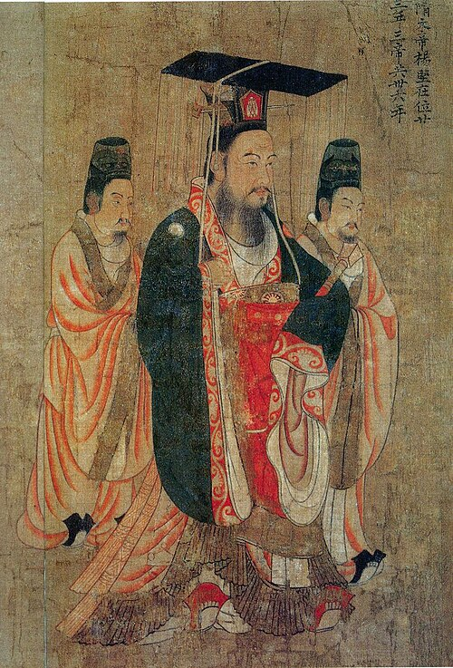 | Tùy Văn Đế CH05-CE06-06 | Sui Wendi Tang.jpg | Yan Li-pen | Public domain | Chân dung Tùy Văn Đế, Thirteen Emperors Scroll (detail), thế kỷ 7. Ảnh: Wikimedia Commons, Public domain. |
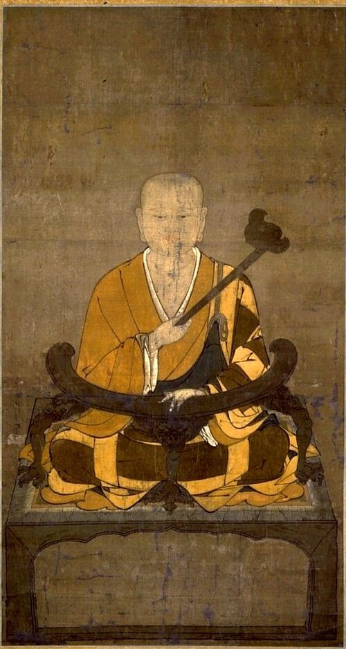 | Trí Di CH05-CE06-07 | Sramana Zhiyi.jpeg | Unknown author Unknown author | Public domain | Chân dung Trí Di, Sramana Zhiyi (tưởng tượng). Ảnh: Wikimedia Commons, Public domain. |
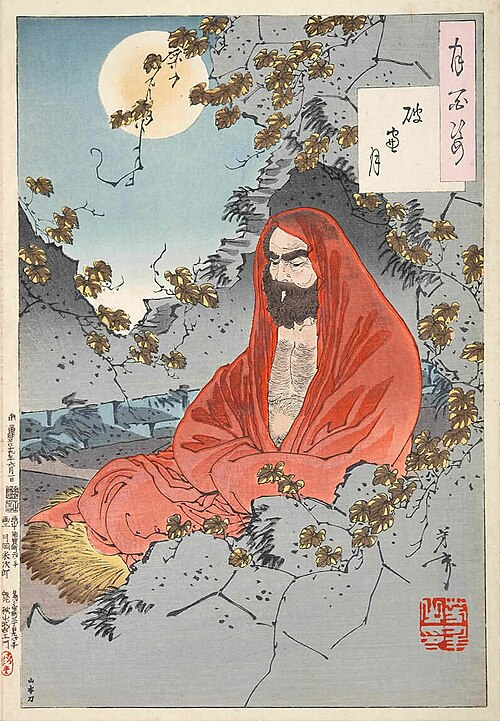 | Bồ-đề-đạt-ma CH05-CE06-08 | BodhidharmaYoshitoshi1887.jpg | Yoshitoshi | Public domain | Chân dung Bồ-đề-đạt-ma (tưởng tượng). Ảnh: Wikimedia Commons, Public domain. |
| Kaleb xứ Aksum CH05-CE06-09 | Kaleb.jpg | Classical Numismatic Group | CC BY-SA 3.0 ghi công bắt buộc | Chân dung Kaleb xứ Aksum, Kaleb, thế kỷ 6. Ảnh: Wikimedia Commons, CC BY-SA 3.0. | |
| Bumin Qaghan CH05-CE06-10 | Pınarbaşı 16.JPG | Vikiçizer | CC BY-SA 4.0 ghi công bắt buộc | Chân dung Bumin Qaghan, Pınarbaşı 16 (tưởng tượng). Ảnh: Wikimedia Commons, CC BY-SA 4.0. | |
| Boethius CH05-CE06-12 | Boethius initial consolation philosophy.jpg | http://special.lib.gla.ac.uk/exhibns/treasures/boethius.html | Public domain | Chân dung Boethius (tưởng tượng). Ảnh: Wikimedia Commons, Public domain. | |
| Ali ibn Abi Talib CH05-CE07-03 | The ten to whom Paradise was promised (Ali).png | عبدالعزيز علي | Public domain | Chân dung Ali ibn Abi Talib, The ten to whom Paradise was promised (Ali) (tưởng tượng). Ảnh: Wikimedia Commons, Public domain. | |
| Đường Thái Tông CH05-CE07-04 | TangTaizong.jpg | Unknown artist Unknown artist | Public domain | Chân dung Đường Thái Tông, Standing Portrait of Emperor Tang Taizong (I), khoảng 1368–1644 (tưởng tượng). Ảnh: Wikimedia Commons, Public domain. | |
| Võ Tắc Thiên CH05-CE07-05 | 唐后行從圖 (局部) - 武則天.png | Likely to be Zhang Xuan (张萱) | Public domain | Chân dung Võ Tắc Thiên, 唐后行從圖 (局部) - 武則天 (tưởng tượng). Ảnh: Wikimedia Commons, Public domain. | |
| Huyền Trang CH05-CE07-06 | Xuanzang w.jpg | Unknown author Unknown author | Public domain | Chân dung Huyền Trang, The Monk Xuanzang (tưởng tượng). Ảnh: Wikimedia Commons, Public domain. | |
| Huệ Năng CH05-CE07-07 | Huineng.jpg | — | Public domain | Chân dung Huệ Năng, Huineng (tưởng tượng). Ảnh: Wikimedia Commons, Public domain. | |
| Brahmagupta CH05-CE07-08 | Hindu astronomer, 19th-century illustration.jpg | Unknown author Unknown author | Public domain | Chân dung Brahmagupta, Hindu astronomer, 19th-century illustration (tưởng tượng). Ảnh: Wikimedia Commons, Public domain. | |
| Isiđôrô thành Seville CH05-CE07-09 | Isidore de Séville.jpg | Meister des Codex 167 | Public domain | Chân dung Isiđôrô thành Seville, Isidori libri originum, Scène : Isidore de Séville., thế kỷ 10 (tưởng tượng). Ảnh: Wikimedia Commons, Public domain. | |
| Pháp Xứng CH05-CE07-10 | Dharmakirti.gif | Original uploader was Baodo at vi.wikipedia | Public domain | Chân dung Pháp Xứng, Dharmakirti (tưởng tượng). Ảnh: Wikimedia Commons, Public domain. | |
| Tùng Tán Cán Bố CH05-CE07-11 | King Songsten Gampo's statue in his meditation cave at Yerpa.jpg | The original uploader was John Hill at English Wikipedia . | CC BY-SA 3.0 ghi công bắt buộc | Chân dung Tùng Tán Cán Bố, King Songsten Gampo's statue in his meditation cave at Yerpa (tưởng tượng). Ảnh: Wikimedia Commons, CC BY-SA 3.0. | |
| Kʼinich Janaabʼ Pakal CH05-CE07-12 | K'inich Janaab Pakal I.jpg | Jami Dwyer | CC BY-SA 2.0 ghi công bắt buộc | Chân dung Kʼinich Janaabʼ Pakal (tưởng tượng). Ảnh: Wikimedia Commons, CC BY-SA 2.0. | |
| Abu Muslim al-Khurasani CH05-CE08-01 | Portrait of Abu Muslim (d. 755) from the genealogy (silsilanāma), Cream of Histories (Zübdet-üt Tevarih, 1598).jpg | 1598 author | Public domain | Chân dung Abu Muslim al-Khurasani (tưởng tượng). Ảnh: Wikimedia Commons, Public domain. | |
| Al-Mansur CH05-CE08-02 | Abbāsid Caliph al-Manṣūr from the genealogy (silsilanāma), Cream of Histories (Zübdet-üt Tevarih, 1598).jpg | 1598 author | Public domain | Chân dung Al-Mansur (tưởng tượng). Ảnh: Wikimedia Commons, Public domain. | |
| Jaʿfar al-Sadiq CH05-CE08-03 | Eight imams and Hakima next to Jawad.jpg | Unknown author Unknown author | Public domain | Chân dung Jaʿfar al-Sadiq, Eight imams and Hakima next to Jawad (tưởng tượng). Ảnh: Wikimedia Commons, Public domain. | |
| Abu Hanifa CH05-CE08-04 | Nu'man bin Thabit Abu Hanifa Masjid an-Nabawi Calligraphy.svg | OatCookies | CC BY-SA 4.0 ghi công bắt buộc | Chân dung Abu Hanifa (tưởng tượng). Ảnh: Wikimedia Commons, CC BY-SA 4.0. | |
| Sibawayh CH05-CE08-05 | Bust of Sibawayh, 28 February 2022 (cropped).jpg | Maometto | CC BY-SA 4.0 ghi công bắt buộc | Chân dung Sibawayh (tưởng tượng). Ảnh: Wikimedia Commons, CC BY-SA 4.0. | |
| Charlemagne CH05-CE08-06 | Charlemagne denier Mayence 812 814.jpg | Charlemagne. Autorité émettrice de monnaie indéterminé. Atelier monétaire. Émetteur | Public domain | Chân dung Charlemagne (tưởng tượng). Ảnh: Wikimedia Commons, Public domain. | |
| Bêđa CH05-CE08-07 | The Venerable Bede translates John 1902.jpg | The original uploader was Timsj at English Wikipedia . | Public domain | Chân dung Bêđa, The Venerable Bede translates John 1902 (tưởng tượng). Ảnh: Wikimedia Commons, Public domain. | |
| Tăng Nhất Hạnh CH05-CE08-08 | Beijing Ancient Observatory 20090715-22.jpg | Hans A. Rosbach | CC BY-SA 3.0 ghi công bắt buộc | Chân dung Tăng Nhất Hạnh, Beijing Ancient Observatory 20090715-22 (tưởng tượng). Ảnh: Wikimedia Commons, CC BY-SA 3.0. | |
| Đỗ Phủ CH05-CE08-09 | Dufu.jpg | Unknown author Unknown author | Public domain | Chân dung Đỗ Phủ, Chinese: 《唐名臣像-唐劍南節度參謀檢校工部員外杜甫》 label QS:Lzh,"唐名臣像-唐劍南節度參謀檢校工部員外杜甫" (tưởng tượng). Ảnh: Wikimedia Commons, Public domain. | |
| Trisong Detsen CH05-CE08-10 | Emperor Trisong Detsen.jpg | Unknown author Unknown author | Public domain | Chân dung Trisong Detsen (tưởng tượng). Ảnh: Wikimedia Commons, Public domain. | |
| Ādi Shankara CH05-CE08-11 | Raja Ravi Varma - Sankaracharya.jpg | Raja Ravi Varma | Public domain | Chân dung Ādi Shankara (tưởng tượng). Ảnh: Wikimedia Commons, Public domain. | |
| Yikʼin Chan Kʼawiil CH05-CE08-12 | TempleIIILintelMaudslay.jpg | — | Public domain | Chân dung Yikʼin Chan Kʼawiil, TempleIIILintelMaudslay (tưởng tượng). Ảnh: Wikimedia Commons, Public domain. | |
| Hàn Dũ CH05-CE09-02 | Han Yu.jpg | This image was carried on the book which is called "Wan hsiao tang-Chu chuang -Hua chuan（晩笑堂竹荘畫傳） " which was published in 1921（民国十年）. | Public domain | Chân dung Hàn Dũ, Han Yu (tưởng tượng). Ảnh: Wikimedia Commons, Public domain. | |
| Kūkai CH05-CE09-03 | Kukai2.jpg | — | Public domain | Chân dung Kūkai (tưởng tượng). Ảnh: Wikimedia Commons, Public domain. | |
| Al-Khwarizmi CH05-CE09-04 | Al-Khwarizmi portrait.jpg | Michel Bakni | Public domain | Chân dung Al-Khwarizmi (tưởng tượng). Ảnh: Wikimedia Commons, Public domain. | |
| Trương Bảo Cao CH05-CE09-05 | Portraits of kings at Tongiljeon.jpg | Christophe95 | CC BY-SA 4.0 ghi công bắt buộc | Chân dung Trương Bảo Cao, Portraits of kings at Tongiljeon (tưởng tượng). Ảnh: Wikimedia Commons, CC BY-SA 4.0. | |
| Hunayn ibn Ishaq CH05-CE09-06 | Hunayn ibn-Ishaq al-'Ibadi Isagoge.jpg | Joannitius | Public domain | Chân dung Hunayn ibn Ishaq, khoảng 1220 (tưởng tượng). Ảnh: Wikimedia Commons, Public domain. | |
| Al-Bukhari CH05-CE09-09 | الامام البخاري.png | خالد بن طارق | CC0 | Chân dung Al-Bukhari, الامام البخاري (tưởng tượng). Ảnh: Wikimedia Commons, CC0. | |
| Johannes Scotus Eriugena CH05-CE09-10 | Johannes Scottus Eriugena.jpg | http://www.hs-augsburg.de/~harsch/Chronologia/Lspost09/Eriugena/eri_intr.html | Public domain | Chân dung Johannes Scotus Eriugena, Johannes Scottus Eriugena (tưởng tượng). Ảnh: Wikimedia Commons, Public domain. | |
| al-Ṭabarī CH05-CE10-01 | الطبري.png | السيف ذو الوشاح | CC BY-SA 4.0 ghi công bắt buộc | Chân dung al-Ṭabarī, الطبري (tưởng tượng). Ảnh: Wikimedia Commons, CC BY-SA 4.0. | |
| Abu Bakr al-Rāzī CH05-CE10-02 | Portrait of Rhazes (al-Razi) (AD 865 - 925) Wellcome L0005053 (cropped).jpg | https://wellcomeimages.org/indexplus/obf_images/40/fd/f7548c12356bc6802be29b9a5fba.jpg Gallery: https://wellcomeimages.org/indexplus/image/L0005053.html Wellcome Collection gallery (2018-04-01): https | CC BY 4.0 ghi công bắt buộc | Chân dung Abu Bakr al-Rāzī, Portrait of Rhazes (al-Razi) (AD 865 - 925) (tưởng tượng). Ảnh: Wikimedia Commons, CC BY 4.0. | |
| al-Fārābī CH05-CE10-03 | Farabi.jpg | Iraninhk | CC BY-SA 4.0 ghi công bắt buộc | Chân dung al-Fārābī, Farabi (tưởng tượng). Ảnh: Wikimedia Commons, CC BY-SA 4.0. | |
| Ismāʿīl Samānī CH05-CE10-04 | TajikistanP19-100Somoni-1999(2000)-donatedeh f.jpg | Бонки миллии Тоҷикистон (National Bank of Tajikistan) (banknote), Steve Burke [1] (photo) | Public domain | Chân dung Ismāʿīl Samānī, TajikistanP19-100Somoni-1999(2000)-donatedeh f (tưởng tượng). Ảnh: Wikimedia Commons, Public domain. | |
| Ki no Tsurayuki CH05-CE10-10 | Sanjūrokkasen-gaku - 2 - Kanō Tan’yū - Ki no Tsurayuki.jpg | Kanō Tan’yū | Public domain | Chân dung Ki no Tsurayuki (tưởng tượng). Ảnh: Wikimedia Commons, Public domain. | |
| ʿAbd al-Raḥmān III CH05-CE10-11 | AtaiforDeGuadalajara-9100538 (cropped).jpg | Rowanwindwhistler | CC BY-SA 4.0 ghi công bắt buộc | Chân dung ʿAbd al-Raḥmān III, AtaiforDeGuadalajara-9100538 (cropped) (tưởng tượng). Ảnh: Wikimedia Commons, CC BY-SA 4.0. | |
| Gerbert d'Aurillac CH05-CE10-12 | Meister der Reichenauer Schule 002 (cropped).jpg | Meister der Reichenauer Schule | Public domain | Chân dung Gerbert d'Aurillac, Evangeliar Kaiser Ottos III., Szene: Der thronende Herrscher, khoảng 1000. Ảnh: Wikimedia Commons, Public domain. | |
 | Ibn Sina CH06-CE11-01 | Avicenna Portrait on Silver Vase - Museum at BuAli Sina (Avicenna) Mausoleum - Hamadan - Western Iran (7423560860).jpg | Adam Jones from Kelowna, BC, Canada | Public domain | Chân dung Ibn Sina (tưởng tượng). Ảnh: Wikimedia Commons, Public domain. |
 | Ibn al-Haytham CH06-CE11-02 | Ibn Al-Haytham portrait.jpg | Michel Bakni | CC BY-SA 4.0 ghi công bắt buộc | Chân dung Ibn al-Haytham (tưởng tượng). Ảnh: Wikimedia Commons, CC BY-SA 4.0. |
 | al-Bīrūnī CH06-CE11-03 | Al-Biruni Portrait.jpg | Michel Bakni | CC BY-SA 4.0 ghi công bắt buộc | Chân dung al-Bīrūnī (tưởng tượng). Ảnh: Wikimedia Commons, CC BY-SA 4.0. |
 | al-Ghazālī CH06-CE11-04 | Al-Ghazali by Khalil Gibran.png | Kahlil Gibran | Public domain | Chân dung al-Ghazālī (tưởng tượng). Ảnh: Wikimedia Commons, Public domain. |
 | Tất Thăng CH06-CE11-05 | Mengxi bitan.jpg | . The original uploader was Mtiovinelli at Italian Wikipedia . | Public domain | Chân dung Tất Thăng, Mengxi bitan (tưởng tượng). Ảnh: Wikimedia Commons, Public domain. |
 | Vương An Thạch CH06-CE11-06 | 歷代聖賢名人像-29-宋丞相王荆公安石.jpg | Unknown author Unknown author | Public domain | Chân dung Vương An Thạch, Chinese: 《歷代聖賢名人像-宋丞相王荆公安石》 label QS:Lzh,"歷代聖賢名人像-宋丞相王荆公安石" (tưởng tượng). Ảnh: Wikimedia Commons, Public domain. |
 | Tô Thức CH06-CE11-07 | Su shi.jpg | Zhao Mengfu | Public domain | Chân dung Tô Thức, Su shi (tưởng tượng). Ảnh: Wikimedia Commons, Public domain. |
 | Anselmô thành Canterbury CH06-CE11-08 | Anselm of Canterbury.jpg | Unknown author Unknown author | Public domain | Chân dung Anselmô thành Canterbury, Anselm of Canterbury, thế kỷ 16 (tưởng tượng). Ảnh: Wikimedia Commons, Public domain. |
 | Giáo hoàng Grêgôriô VII CH06-CE11-09 | Gregorius (Vita Gregorii VII).jpg | Paul von Bernried, creator Armin P., original uploader | Public domain | Chân dung Giáo hoàng Grêgôriô VII, Gregorius (Vita Gregorii VII) (tưởng tượng). Ảnh: Wikimedia Commons, Public domain. |
 | Guido d'Arezzo CH06-CE11-10 | Guido van Arezzo.jpg | The original uploader was Robbot at Dutch Wikipedia . | Public domain | Chân dung Guido d'Arezzo, Guido van Arezzo (tưởng tượng). Ảnh: Wikimedia Commons, Public domain. |
 | Rajendra Chola I CH06-CE11-11 | Rajendra Chola.JPG | David George | CC BY-SA 4.0 ghi công bắt buộc | Chân dung Rajendra Chola I, Rajendra Chola (tưởng tượng). Ảnh: Wikimedia Commons, CC BY-SA 4.0. |
 | Airlangga CH06-CE11-12 | Airlangga.jpg | Gunawan Kartapranata | CC BY-SA 3.0 ghi công bắt buộc | Chân dung Airlangga (tưởng tượng). Ảnh: Wikimedia Commons, CC BY-SA 3.0. |
 | Ibn Rushd CH06-CE12-01 | Statue of Averroes in Córdoba, Spain.jpg | Saleemzohaib | CC BY 3.0 ghi công bắt buộc | Chân dung Ibn Rushd, Statue of Averroes in Córdoba, Spain (tưởng tượng). Ảnh: Wikimedia Commons, CC BY 3.0. |
 | Maimonides CH06-CE12-02 | Maimonides-2.jpg | Blaisio Ugolino | Public domain | Chân dung Maimonides, 1744 (tưởng tượng). Ảnh: Wikimedia Commons, Public domain. |
 | al-Idrīsī CH06-CE12-03 | Estatua de Al-Idrisi en Ceuta.jpg | Marek | CC BY 3.0 ghi công bắt buộc | Chân dung al-Idrīsī (tưởng tượng). Ảnh: Wikimedia Commons, CC BY 3.0. |
 | Chu Hy CH06-CE12-04 | 唯一可靠的朱熹画像.jpg | 向史公哲曰 | CC BY-SA 4.0 ghi công bắt buộc | Chân dung Chu Hy, 唯一可靠的朱熹画像 (tưởng tượng). Ảnh: Wikimedia Commons, CC BY-SA 4.0. |
 | Lý Thanh Chiếu CH06-CE12-05 | Li Qingzhao statue.JPG | Gisling | CC BY 3.0 ghi công bắt buộc | Chân dung Lý Thanh Chiếu, Li Qingzhao statue (tưởng tượng). Ảnh: Wikimedia Commons, CC BY 3.0. |
 | Pháp Nhiên CH06-CE12-06 | Takanobu-no-miei.jpg | Fujiwara, Takanobu (1142-1205) | Public domain | Chân dung Pháp Nhiên, Takanobu-no-miei, thế kỷ 12. Ảnh: Wikimedia Commons, Public domain. |
 | Hildegard xứ Bingen CH06-CE12-07 | Hildegard von Bingen.jpg | Unknown author Unknown author | Public domain | Chân dung Hildegard xứ Bingen, Hildegard von Bingen (tưởng tượng). Ảnh: Wikimedia Commons, Public domain. |
 | Pierre Abélard CH06-CE12-08 | Abelard.jpg | Unknown author Unknown author | Public domain | Chân dung Pierre Abélard, Abelard (tưởng tượng). Ảnh: Wikimedia Commons, Public domain. |
 | Gratianus CH06-CE12-09 | Gratian.jpg | [1] | Public domain | Chân dung Gratianus, Gratian (tưởng tượng). Ảnh: Wikimedia Commons, Public domain. |
 | Suryavarman II CH06-CE12-11 | SuryavarmanII01.JPG | — | CC BY-SA 3.0 ghi công bắt buộc | Chân dung Suryavarman II, SuryavarmanII01 (tưởng tượng). Ảnh: Wikimedia Commons, CC BY-SA 3.0. |
 | Saladin CH06-CE12-12 | Al-Nasir I Salah al-Din Yusuf (Saladin). AH 564-589 (1169-1193 CE) Æ Dirham (30.1mm, 13.28 g, 6h). Without mint-name. Dated AH 586 (AD 1190-91). Sultan sitting facing, cross-legged, on high-backed throne (obverse).jpg | Classical Numismatic Group (CNG) | CC BY-SA 2.5 ghi công bắt buộc | Chân dung Saladin (tưởng tượng). Ảnh: Wikimedia Commons, CC BY-SA 2.5. |
 | Thành Cát Tư Hãn CH06-CE13-01 | YuanEmperorAlbumGenghisPortrait.jpg | Unknown author Unknown author | Public domain | Chân dung Thành Cát Tư Hãn, thế kỷ 14 (tưởng tượng). Ảnh: Wikimedia Commons, Public domain. |
 | Hốt Tất Liệt CH06-CE13-02 | YuanEmperorAlbumKhubilaiPortrait.jpg | Araniko | Public domain | Chân dung Hốt Tất Liệt, khoảng 1294. Ảnh: Wikimedia Commons, Public domain. |
 | Tôma Aquinô CH06-CE13-03 | St-thomas-aquinasFXD.jpg | Carlo Crivelli | Public domain | Chân dung Tôma Aquinô, 1476 (tưởng tượng). Ảnh: Wikimedia Commons, Public domain. |
 | Phanxicô thành Assisi CH06-CE13-04 | StFrancis part.jpg | Parzi | Public domain | Chân dung Phanxicô thành Assisi, StFrancis part (tưởng tượng). Ảnh: Wikimedia Commons, Public domain. |
 | Fibonacci CH06-CE13-05 | Fibonacci5.jpg | Unknown | Public domain | Chân dung Fibonacci (tưởng tượng). Ảnh: Wikimedia Commons, Public domain. |
 | Rumi CH06-CE13-06 | مولانا اثر حسین بهزاد (cropped).jpg | Hossein Behzad | Public domain | Chân dung Rumi, مولانا, 1336. Ảnh: Wikimedia Commons, Public domain. |
 | Ibn ʿArabī CH06-CE13-07 | Ibn Arabi.jpg | Unknown author Unknown author | Public domain | Chân dung Ibn ʿArabī (tưởng tượng). Ảnh: Wikimedia Commons, Public domain. |
 | Naṣīr al-Dīn al-Ṭūsī CH06-CE13-08 | Nasir al-Din Tusi.jpg | scan of stamp 30 May 2006 | Public domain | Chân dung Naṣīr al-Dīn al-Ṭūsī, Nasir al-Din Tusi (tưởng tượng). Ảnh: Wikimedia Commons, Public domain. |
 | Đạo Nguyên CH06-CE13-09 | Dogen.jpg | Shii | Public domain | Chân dung Đạo Nguyên, Dogen, khoảng 1250. Ảnh: Wikimedia Commons, Public domain. |
 | Quách Thủ Kính CH06-CE13-10 | Guo Shoujing-beijing.JPG | Shizhao | CC BY 2.5 ghi công bắt buộc | Chân dung Quách Thủ Kính, Guo Shoujing-beijing (tưởng tượng). Ảnh: Wikimedia Commons, CC BY 2.5. |
 | Jayavarman VII CH06-CE13-11 | JayavarmanVII.jpg | Suzan Black | CC BY 3.0 ghi công bắt buộc | Chân dung Jayavarman VII, JayavarmanVII (tưởng tượng). Ảnh: Wikimedia Commons, CC BY 3.0. |
 | Ibn Khaldūn CH06-CE14-01 | Bust of Ibn Khaldun (Casbah of Bejaia, Algeria).jpg | Reda Kerbush | CC BY-SA 4.0 ghi công bắt buộc | Chân dung Ibn Khaldūn, 2017 (tưởng tượng). Ảnh: Wikimedia Commons, CC BY-SA 4.0. |
 | Ibn Baṭṭūṭa CH06-CE14-02 | Bust of Ibn Battuta at Ibn Battuta museum.jpg | Ideophagous | CC BY-SA 4.0 ghi công bắt buộc | Chân dung Ibn Baṭṭūṭa (tưởng tượng). Ảnh: Wikimedia Commons, CC BY-SA 4.0. |
 | Hafez CH06-CE14-03 | Anselm Feuerbach Hafis vor der Schenke (cropped).jpg | Anselm Feuerbach | Public domain | Chân dung Hafez, German: Hafis vor der Schenke label QS:Lde,"Hafis vor der Schenke" (tưởng tượng). Ảnh: Wikimedia Commons, Public domain. |
 | Petrarca CH06-CE14-04 | Altichiero, ritratto di Francesco Petrarca.jpg | Altichiero | Public domain | Chân dung Petrarca, khoảng 1370. Ảnh: Wikimedia Commons, Public domain. |
 | William xứ Ockham CH06-CE14-05 | William of Ockham.png | self-created (Moscarlop) | CC BY-SA 3.0 ghi công bắt buộc | Chân dung William xứ Ockham, William of Ockham (tưởng tượng). Ảnh: Wikimedia Commons, CC BY-SA 3.0. |
 | Giotto CH06-CE14-06 | Uffizi Giotto.jpg | Original uploader was Frieda at it.wikipedia | CC BY-SA 3.0 ghi công bắt buộc | Chân dung Giotto (tưởng tượng). Ảnh: Wikimedia Commons, CC BY-SA 3.0. |
 | Minh Thái Tổ CH06-CE14-07 | Portrait assis de l'empereur Ming Taizu.jpg | Unknown author Unknown author | Public domain | Chân dung Minh Thái Tổ, khoảng 1368–1644. Ảnh: Wikimedia Commons, Public domain. |
 | Triều Tiên Thái Tổ CH06-CE14-08 | King Taejo Yi 02.jpg | Jo Jung-muk(?-?), Pak Gijun(?-?), Baek Eunbae(1820-?), Yu Suk(1827-1873) | Public domain | Chân dung Triều Tiên Thái Tổ, King Taejo Yi 02, khoảng 1872 (tưởng tượng). Ảnh: Wikimedia Commons, Public domain. |
 | Mansa Musa CH06-CE14-09 | Kanga Moussa Atlas Catalan.jpg | Cresques Abraham | Public domain | Chân dung Mansa Musa, Kanga Moussa Atlas Catalan, 1375. Ảnh: Wikimedia Commons, Public domain. |
 | Gajah Mada CH06-CE14-11 | Gajah-Mada.jpg | Gunawan Kartapranata ( talk ) | CC BY-SA 3.0 ghi công bắt buộc | Chân dung Gajah Mada (tưởng tượng). Ảnh: Wikimedia Commons, CC BY-SA 3.0. |
 | Timur CH06-CE14-12 | Timur seated (earliest known portrait), Timurid genealogy, 1405-1409, Samarkand (TSMK, H2152).jpg | 1405-1409 artist | Public domain | Chân dung Timur, 1405. Ảnh: Wikimedia Commons, Public domain. |
 | Johannes Gutenberg CH07-CE15-01 | Gutenberg.jpg | http://www.sru.edu/depts/cisba/compsci/dailey/217students/sgm8660/Final/ | Public domain | Chân dung Johannes Gutenberg, Gutenberg, 2004 (tưởng tượng). Ảnh: Wikimedia Commons, Public domain. |
 | Filippo Brunelleschi CH07-CE15-02 | Masaccio, cappella brancacci, san pietro in cattedra. ritratto di filippo brunelleschi.jpg | see filename or category | Public domain | Chân dung Filippo Brunelleschi, 1423. Ảnh: Wikimedia Commons, Public domain. |
 | Lorenzo Valla CH07-CE15-03 | Portret van Lorenzo Valla Laurentius Valla (titel op object), RP-P-1909-4359.jpg | Rijksmuseum | CC0 | Chân dung Lorenzo Valla, khoảng 1597 (tưởng tượng). Ảnh: Wikimedia Commons, CC0. |
 | Trịnh Hoà CH07-CE15-05 | 2016 Malakka, Stadhuys (09).jpg | Marcin Konsek | CC BY-SA 4.0 ghi công bắt buộc | Chân dung Trịnh Hoà, 2016 Malakka, Stadhuys (09), 2016 (tưởng tượng). Ảnh: Wikimedia Commons, CC BY-SA 4.0. |
 | Mehmed II CH07-CE15-06 | Portrait of Mehmet II (cropped). Human Physiognomy Concerning the Personal Dispositions of the Ottomans, 1579 (TSMK H.1563).jpg | Painter Nakkash Osman (active 1559-96), work created in 1579 | Public domain | Chân dung Mehmed II, 1579. Ảnh: Wikimedia Commons, Public domain. |
 | Ulugh Beg CH07-CE15-07 | Ulugh Beg, Timurid painting 1425-50.jpg | Unknown artist Unknown artist | Public domain | Chân dung Ulugh Beg, 1425. Ảnh: Wikimedia Commons, Public domain. |
 | Pachacuti CH07-CE15-08 | Brooklyn Museum - Pachacuti, Tenth Inca, 1 of 14 Portraits of Inca Kings (cropped).jpg | Online Collection of Brooklyn Museum ; Photo: Brooklyn Museum, 1995.29.10_PS6.jpg | Public domain | Chân dung Pachacuti, 1750 (tưởng tượng). Ảnh: Wikimedia Commons, Public domain. |
 | Nezahualcóyotl CH07-CE15-09 | Nezahualcoyotl.jpg | Anonymous Unknown author | Public domain | Chân dung Nezahualcóyotl, thế kỷ 16. Ảnh: Wikimedia Commons, Public domain. |
 | Kabir CH07-CE15-10 | Kabir (postage stamp).jpg | India Post, Government of India | Public domain | Chân dung Kabir, 1952 (tưởng tượng). Ảnh: Wikimedia Commons, Public domain. |
 | Ewuare CH07-CE15-11 | Oba Ewuare the Great!.jpg | Ebameful | CC BY-SA 4.0 ghi công bắt buộc | Chân dung Ewuare, 2016 (tưởng tượng). Ảnh: Wikimedia Commons, CC BY-SA 4.0. |
 | Cristoforo Colombo CH07-CE15-12 | Ridolfo del Ghirlandaio - Ritratto di Cristoforo Colombo (1520).jpg | Ridolfo del Ghirlandaio | Public domain | Chân dung Cristoforo Colombo, Christopher Columbus, khoảng 1520. Ảnh: Wikimedia Commons, Public domain. |
 | Martin Luther CH07-CE16-01 | Lucas Cranach d.Ä. - Martin Luther, 1528 (Veste Coburg).jpg | Lucas Cranach the Elder | Public domain | Chân dung Martin Luther, 1528. Ảnh: Wikimedia Commons, Public domain. |
 | Erasmus CH07-CE16-02 | Holbein-erasmus.jpg | Hans Holbein the Younger | Public domain | Chân dung Erasmus, 1523. Ảnh: Wikimedia Commons, Public domain. |
 | Nicolaus Copernicus CH07-CE16-03 | Nikolaus Kopernikus MOT.jpg | Unknown author Unknown author | Public domain | Chân dung Nicolaus Copernicus, Nikolaus Kopernikus MOT, khoảng 1580. Ảnh: Wikimedia Commons, Public domain. |
 | Leonardo da Vinci CH07-CE16-04 | Francesco Melzi - Portrait of Leonardo.png | Attributed to Francesco Melzi | Public domain | Chân dung Leonardo da Vinci, khoảng 1515–1517. Ảnh: Wikimedia Commons, Public domain. |
 | Suleiman I CH07-CE16-05 | EmperorSuleiman.jpg | Circle of Titian | Public domain | Chân dung Suleiman I, 1530. Ảnh: Wikimedia Commons, Public domain. |
 | Taqī al-Dīn CH07-CE16-06 | Taqi al din.jpg | Ala ad-Din Mansur-Shirazi | Public domain | Chân dung Taqī al-Dīn, khoảng 1574. Ảnh: Wikimedia Commons, Public domain. |
 | Akbar CH07-CE16-07 | Contemporary seated portrait of Akbar, 1605.jpg | 1605 artist | Public domain | Chân dung Akbar, 1605. Ảnh: Wikimedia Commons, Public domain. |
 | Vương Dương Minh CH07-CE16-08 | 蔡世新 王阳明肖像轴 (cropped).jpg | Cai Shixin | Public domain | Chân dung Vương Dương Minh, 蔡世新 王阳明肖像轴, khoảng 1368–1644. Ảnh: Wikimedia Commons, Public domain. |
 | Lý Thời Trân CH07-CE16-09 | Li Shizhen portrait.jpg | Unknown author Unknown author | Public domain | Chân dung Lý Thời Trân, Li Shizhen portrait. Ảnh: Wikimedia Commons, Public domain. |
 | Toyotomi Hideyoshi CH07-CE16-10 | Toyotomi Hideyoshi (Kodaiji).jpg | Kanō Mitsunobu | Public domain | Chân dung Toyotomi Hideyoshi, khoảng 1601. Ảnh: Wikimedia Commons, Public domain. |
 | Inca Garcilaso de la Vega CH07-CE16-12 | Inca Garcilaso 1879.jpg | Carlos Penoso Sc. [1] | Public domain | Chân dung Inca Garcilaso de la Vega, Inca Garcilaso 1879, 1879 (tưởng tượng). Ảnh: Wikimedia Commons, Public domain. |
| Johannes Kepler CH08-CE17-01 | JKepler.jpg | August Köhler [1] | Public domain | Chân dung Johannes Kepler, JKepler, 1910 (tưởng tượng). Ảnh: Wikimedia Commons, Public domain. | |
| Galileo Galilei CH08-CE17-02 | Galileo.arp.300pix.jpg | Justus Sustermans | Public domain | Chân dung Galileo Galilei, khoảng 1640. Ảnh: Wikimedia Commons, Public domain. | |
| Isaac Newton CH08-CE17-03 | GodfreyKneller-IsaacNewton-1689.jpg | Godfrey Kneller | Public domain | Chân dung Isaac Newton, 1689. Ảnh: Wikimedia Commons, Public domain. | |
| René Descartes CH08-CE17-04 | Frans Hals - Portret van René Descartes.jpg | After Frans Hals | Public domain | Chân dung René Descartes, 1649. Ảnh: Wikimedia Commons, Public domain. | |
| John Locke CH08-CE17-05 | JohnLocke.png | Godfrey Kneller | Public domain | Chân dung John Locke, 1697. Ảnh: Wikimedia Commons, Public domain. | |
| Tokugawa Ieyasu CH08-CE17-08 | Tokugawa Ieyasu2.JPG | Kanō Tan'yū | Public domain | Chân dung Tokugawa Ieyasu. Ảnh: Wikimedia Commons, Public domain. | |
| Khang Hy CH08-CE17-09 | 清 佚名 《清圣祖康熙皇帝朝服像》.jpg | Anonymous Unknown author Qing Dynasty Court Painter | Public domain | Chân dung Khang Hy. Ảnh: Wikimedia Commons, Public domain. | |
| Nzinga Mbande CH08-CE17-10 | Ann Zingha.jpg | Achille Devéria | Public domain | Chân dung Nzinga Mbande, Ann Zingha, 1830 (tưởng tượng). Ảnh: Wikimedia Commons, Public domain. | |
| Sor Juana Inés de la Cruz CH08-CE17-11 | Sor Juana Inés de la Cruz, 1732 - Fray Miguel de Herrera.jpg | Fray Miguel de Herrera | Public domain | Chân dung Sor Juana Inés de la Cruz, 2019 (tưởng tượng). Ảnh: Wikimedia Commons, Public domain. | |
| Sultan Agung CH08-CE17-12 | Anyakrakusuma of Mataram.jpg | Basuki Bawono | CC BY-SA 3.0 ghi công bắt buộc | Chân dung Sultan Agung, Anyakrakusuma of Mataram, 2008 (tưởng tượng). Ảnh: Wikimedia Commons, CC BY-SA 3.0. | |
| Voltaire CH08-CE18-01 | Nicolas de Largillière - Portrait de Voltaire (1694-1778) en 1718 - P208 - musée Carnavalet - 5 (cropped).jpg | Nicolas de Largillière | CC0 | Chân dung Voltaire, 1718. Ảnh: Wikimedia Commons, CC0. | |
 | Jean-Jacques Rousseau CH08-CE18-02 | Jean-Jacques Rousseau (painted portrait).jpg | Maurice Quentin de La Tour | Public domain | Chân dung Jean-Jacques Rousseau, thế kỷ 18. Ảnh: Wikimedia Commons, Public domain. |
| Immanuel Kant CH08-CE18-03 | Immanuel Kant - Gemaelde 2.jpg | Becker | Public domain | Chân dung Immanuel Kant, 1768. Ảnh: Wikimedia Commons, Public domain. | |
| Adam Smith CH08-CE18-04 | AdamSmith.jpg | Etching created by Cadell and Davies (1811), John Horsburgh (1828) or R.C. Bell (1872). | Public domain | Chân dung Adam Smith, AdamSmith, 1787. Ảnh: Wikimedia Commons, Public domain. | |
| Antoine Lavoisier CH08-CE18-05 | David - Portrait of Monsieur Lavoisier (cropped).jpg | Jacques-Louis David | Public domain | Chân dung Antoine Lavoisier, 1788. Ảnh: Wikimedia Commons, Public domain. | |
| Đới Chấn CH08-CE18-06 | Dai Zhen.png | 楊鵬秋 | Public domain | Chân dung Đới Chấn, Dai Zhen, thế kỷ 19. Ảnh: Wikimedia Commons, Public domain. | |
| Sugita Genpaku CH08-CE18-07 | Sugita Genpaku.jpg | Ishikawa Tairō | Public domain | Chân dung Sugita Genpaku, thế kỷ 18. Ảnh: Wikimedia Commons, Public domain. | |
| Shah Waliullah Dehlawi CH08-CE18-08 | Shah Waliullah Name.svg | Yethrosh | CC BY-SA 4.0 ghi công bắt buộc | Chân dung Shah Waliullah Dehlawi, Shah Waliullah Name, 2020 (tưởng tượng). Ảnh: Wikimedia Commons, CC BY-SA 4.0. | |
| Muhammad ibn Abd al-Wahhab CH08-CE18-09 | محمد بن عبد الوهاب.png | أبو آسر | CC BY-SA 3.0 ghi công bắt buộc | Chân dung Muhammad ibn Abd al-Wahhab, محمد بن عبد الوهاب, 2017 (tưởng tượng). Ảnh: Wikimedia Commons, CC BY-SA 3.0. | |
| Túpac Amaru II CH08-CE18-10 | Acuarela de Túpac Amaru II crop.jpg | Anonymous Unknown author | Public domain | Chân dung Túpac Amaru II, khoảng 1784–1806. Ảnh: Wikimedia Commons, Public domain. | |
| Olaudah Equiano CH08-CE18-11 | Olaudah Equiano - Project Gutenberg eText 15399.png | Unknown author Unknown author | Public domain | Chân dung Olaudah Equiano, 1789. Ảnh: Wikimedia Commons, Public domain. | |
| Benjamin Franklin CH08-CE18-12 | Joseph Siffrein Duplessis - Benjamin Franklin - Google Art Project.jpg | Joseph-Siffred Duplessis | Public domain | Chân dung Benjamin Franklin, khoảng 1785. Ảnh: Wikimedia Commons, Public domain. | |
| Michael Faraday CH09-CE19-01 | M Faraday Th Phillips oil 1842.jpg | Thomas Phillips | Public domain | Chân dung Michael Faraday, M Faraday Th Phillips oil 1842, 1842. Ảnh: Wikimedia Commons, Public domain. | |
| Charles Darwin CH09-CE19-02 | Charles Darwin portrait.jpg | Herbert Rose Barraud | Public domain | Chân dung Charles Darwin, 1881. Ảnh: Wikimedia Commons, Public domain. | |
| Louis Pasteur CH09-CE19-04 | Louis Pasteur (1822 - 1895), microbiologist and chemist Wellcome V0026980.jpg | Paul Nadar | Public domain | Chân dung Louis Pasteur. Ảnh: Wikimedia Commons, Public domain. | |
| Muhammad Ali Pasha CH09-CE19-05 | ModernEgypt, Muhammad Ali by Auguste Couder, BAP 17996.jpg | Auguste Couder | Public domain | Chân dung Muhammad Ali Pasha, 1841. Ảnh: Wikimedia Commons, Public domain. | |
 | Fukuzawa Yukichi CH09-CE19-06 | Fukuzawa Yukichi 1891.jpg | Fukuzawa Research Center | Public domain | Chân dung Fukuzawa Yukichi, 1891. Ảnh: Wikimedia Commons, Public domain. |
| Ram Mohan Roy CH09-CE19-07 | Portrait of Raja Ram Mohun Roy, 1833.jpg | Rembrandt Peale | Public domain | Chân dung Ram Mohan Roy, Portrait of Raja Ram Mohun Roy, 1833, 1833. Ảnh: Wikimedia Commons, Public domain. | |
| Menelik II CH09-CE19-08 | Menelik II in coronation garb, Emperor of Ethiopia.jpg | Unknown author Unknown author | Public domain | Chân dung Menelik II, thế kỷ 20. Ảnh: Wikimedia Commons, Public domain. | |
| Simón Bolívar CH09-CE19-09 | Simón Bolívar by Acevedo Bernal, 1922.jpg | Ricardo Acevedo Bernal | Public domain | Chân dung Simón Bolívar, 1922. Ảnh: Wikimedia Commons, Public domain. | |
| José Rizal CH09-CE19-10 | Jose Rizal full.jpg | unknown author | Public domain | Chân dung José Rizal. Ảnh: Wikimedia Commons, Public domain. | |
| Te Whiti o Rongomai CH09-CE19-11 | Whiti.jpg | G. Sherriff | Public domain | Chân dung Te Whiti o Rongomai, Whiti, 2008 (tưởng tượng). Ảnh: Wikimedia Commons, Public domain. | |
| Abai Qunanbaiuly CH09-CE19-12 | Abai Kunanbaev.jpg | — | Public domain | Chân dung Abai Qunanbaiuly, Abai Kunanbaev. Ảnh: Wikimedia Commons, Public domain. | |
| Albert Einstein CH10-CE20-01 | Einstein 1921 by F Schmutzer - restoration.jpg | Ferdinand Schmutzer / Adam Cuerden | Public domain | Chân dung Albert Einstein, Einstein 1921 by F Schmutzer - restoration, 1921. Ảnh: Wikimedia Commons, Public domain. | |
| Ernest Rutherford CH10-CE20-02 | Ernest Rutherford LOC.jpg | George Grantham Bain Collection (Library of Congress) | Public domain | Chân dung Ernest Rutherford. Ảnh: Wikimedia Commons, Public domain. | |
| Alan Turing CH10-CE20-03 | Alan Turing (1951) (crop).jpg | Elliott & Fry | Public domain | Chân dung Alan Turing, 1951. Ảnh: Wikimedia Commons, Public domain. | |
| John Maynard Keynes CH10-CE20-04 | Keynes 1933.jpg | Unknown author Unknown author | Public domain | Chân dung John Maynard Keynes, Keynes 1933, 1933. Ảnh: Wikimedia Commons, Public domain. | |
| Mahatma Gandhi CH10-CE20-05 | Mahatma-Gandhi, studio, 1931.jpg | Elliott & Fry | Public domain | Chân dung Mahatma Gandhi, 1931. Ảnh: Wikimedia Commons, Public domain. | |
| B. R. Ambedkar CH10-CE20-06 | Dr. Bhimrao Ambedkar.jpg | Unknown author Unknown author | Public domain | Chân dung B. R. Ambedkar, Dr. Bhimrao Ambedkar, khoảng 1948. Ảnh: Wikimedia Commons, Public domain. | |
| Mustafa Kemal Atatürk CH10-CE20-08 | Atatürk Kemal.jpg | Unknown author Unknown author | Public domain | Chân dung Mustafa Kemal Atatürk, Atatürk Kemal. Ảnh: Wikimedia Commons, Public domain. | |
| Nelson Mandela CH10-CE20-09 | Nelson Mandela 1994.jpg | Kingkongphoto & www.celebrity-photos.com from Laurel | CC BY-SA 2.0 ghi công bắt buộc | Chân dung Nelson Mandela, 1994. Ảnh: Wikimedia Commons, CC BY-SA 2.0. | |
| Martin Luther King Jr. CH10-CE20-10 | The Rev. Dr. Martin Luther King Jr. Color Portrait (high quality).jpg | Associated Press | Public domain | Chân dung Martin Luther King Jr., 1966. Ảnh: Wikimedia Commons, Public domain. | |
| Norman Borlaug CH10-CE20-11 | Norman Borlaug.jpg | — | Public domain | Chân dung Norman Borlaug. Ảnh: Wikimedia Commons, Public domain. | |
| Sukarno CH10-CE20-12 | Presiden Sukarno.jpg | Onbekend /Anonymous | Public domain | Chân dung Sukarno, khoảng 1949. Ảnh: Wikimedia Commons, Public domain. | |
 | Tim Berners-Lee CH11-CE21-01 | LS3 4919 (cropped).jpg | Web Summit | CC BY 2.0 ghi công bắt buộc | Chân dung Tim Berners-Lee, LS3 4919 (cropped), 2024. Ảnh: Wikimedia Commons, CC BY 2.0. |
 | Geoffrey Hinton CH11-CE21-02 | Geoffrey Hinton in 2026.jpg | Cmichel67 | CC BY-SA 4.0 ghi công bắt buộc | Chân dung Geoffrey Hinton, 2026. Ảnh: Wikimedia Commons, CC BY-SA 4.0. |
 | Jennifer Doudna CH11-CE21-03 | Professor Jennifer Doudna ForMemRS (cropped).jpg | Duncan.Hull | CC BY-SA 4.0 ghi công bắt buộc | Chân dung Jennifer Doudna, 2016. Ảnh: Wikimedia Commons, CC BY-SA 4.0. |
 | Katalin Karikó CH11-CE21-04 | Katalin Kariko light corrected.jpeg | File:Katalin Kariko.jpg : Krdobyns derivative work: Innisfree987 | CC BY-SA 4.0 ghi công bắt buộc | Chân dung Katalin Karikó, 2020. Ảnh: Wikimedia Commons, CC BY-SA 4.0. |
 | Svante Pääbo CH11-CE21-05 | Professor Svante Paabo ForMemRS (cropped).jpg | Duncan.Hull | CC BY-SA 4.0 ghi công bắt buộc | Chân dung Svante Pääbo, 2016. Ảnh: Wikimedia Commons, CC BY-SA 4.0. |
 | Demis Hassabis CH11-CE21-06 | Demis Hassabis, 2024 Nobel Prize Laureate in Chemistry 7 (cropped).jpg | John Sears | CC BY-SA 4.0 ghi công bắt buộc | Chân dung Demis Hassabis, 2024. Ảnh: Wikimedia Commons, CC BY-SA 4.0. |
 | Muhammad Yunus CH11-CE21-08 | Muhammad Yunus (cropped).jpg | University of Salford Press Office | CC BY 2.0 ghi công bắt buộc | Chân dung Muhammad Yunus, 2013. Ảnh: Wikimedia Commons, CC BY 2.0. |
 | Wangari Maathai CH11-CE21-09 | Wangari Matthai 2001 (cropped).jpg | Kingkongphoto & www.celebrity-photos.com from Laurel Maryland, USA | CC BY-SA 2.0 ghi công bắt buộc | Chân dung Wangari Maathai, Wangari Matthai 2001 (cropped), 2005. Ảnh: Wikimedia Commons, CC BY-SA 2.0. |
 | Brian Schmidt CH11-CE21-11 | Brian Schmidt portrait 1.jpg | Tim Wetherell | CC BY-SA 3.0 ghi công bắt buộc | Chân dung Brian Schmidt, 2011. Ảnh: Wikimedia Commons, CC BY-SA 3.0. |
 | An Dương Vương CH90-BCE03_01-01 | AnDuongVuong.jpg | Amore Mio | CC BY-SA 3.0 ghi công bắt buộc | Chân dung An Dương Vương, AnDuongVuong (tưởng tượng). Ảnh: Wikimedia Commons, CC BY-SA 3.0. |
 | Triệu Đà CH90-BCE03_01-02 | A statue of Zhao Tuo.jpg | David Chen ( Iamdavidtheking 11:50, 10 September 2007 (UTC)) | CC BY 3.0 ghi công bắt buộc | Chân dung Triệu Đà, A statue of Zhao Tuo (tưởng tượng). Ảnh: Wikimedia Commons, CC BY 3.0. |
 | Bà Triệu CH90-CE01_09-02 | Ba trieu cuoi voi.jpg | Nghệ nhân tranh Đông Hồ | Public domain | Chân dung Bà Triệu (tưởng tượng). Ảnh: Wikimedia Commons, Public domain. |
 | Lý Nam Đế CH90-CE01_09-05 | Emperor Ly Nam De.jpg | Unknown author Unknown author | Public domain | Chân dung Lý Nam Đế, thế kỷ 18 (tưởng tượng). Ảnh: Wikimedia Commons, Public domain. |
 | Phùng Hưng CH90-CE01_09-07 | TuongPhungHung.jpg | Doãn Hiệu at Vietnamese Wikipedia | CC BY 3.0 ghi công bắt buộc | Chân dung Phùng Hưng, TuongPhungHung (tưởng tượng). Ảnh: Wikimedia Commons, CC BY 3.0. |
 | Đinh Bộ Lĩnh CH90-CE10_14-02 | VuaDinhTienHoang.jpg | Hungquoc at Vietnamese Wikipedia | Public domain | Chân dung Đinh Bộ Lĩnh, VuaDinhTienHoang (tưởng tượng). Ảnh: Wikimedia Commons, Public domain. |
 | Trần Hưng Đạo CH90-CE10_14-07 | Tran Hung Dao - Nha Trang - 2.jpg | Odessey | CC BY-SA 3.0 ghi công bắt buộc | Chân dung Trần Hưng Đạo (tưởng tượng). Ảnh: Wikimedia Commons, CC BY-SA 3.0. |
 | Trần Nhân Tông CH90-CE10_14-08 | Trần Nhân Tông.jpg | Lưu Ly at Vietnamese Wikipedia | Public domain | Chân dung Trần Nhân Tông (tưởng tượng). Ảnh: Wikimedia Commons, Public domain. |
 | Chu Văn An CH90-CE10_14-09 | Chu Văn An statue.jpg | davidhealy | CC BY-SA 2.0 ghi công bắt buộc | Chân dung Chu Văn An (tưởng tượng). Ảnh: Wikimedia Commons, CC BY-SA 2.0. |
 | Lê Lợi CH90-CE15_18-01 | Le Loi statue.JPG | Nguyễn Thanh Quang | CC BY-SA 3.0 ghi công bắt buộc | Chân dung Lê Lợi, 2006 (tưởng tượng). Ảnh: Wikimedia Commons, CC BY-SA 3.0. |
 | Nguyễn Trãi CH90-CE15_18-02 | Nguyen Trai.jpg | Unknown author Unknown author | Public domain | Chân dung Nguyễn Trãi, 1400. Ảnh: Wikimedia Commons, Public domain. |
 | Lê Thánh Tông CH90-CE15_18-03 | Lê Thánh Tông.jpg | Ngoisao.vn | Public domain | Chân dung Lê Thánh Tông. Ảnh: Wikimedia Commons, Public domain. |
 | Nguyễn Bỉnh Khiêm CH90-CE15_18-04 | Cao Dai three saints signing an accord.jpg | Nguyễn Thanh Quang (picture by Lê Minh Tòng) | CC BY-SA 3.0 ghi công bắt buộc | Chân dung Nguyễn Bỉnh Khiêm, Cao Dai three saints signing an accord, 2006 (tưởng tượng). Ảnh: Wikimedia Commons, CC BY-SA 3.0. |
 | Nguyễn Hoàng CH90-CE15_18-05 | Nguyen hoang.jpg | Nguyễn Hoàng Quý | CC BY-SA 4.0 ghi công bắt buộc | Chân dung Nguyễn Hoàng, 2021 (tưởng tượng). Ảnh: Wikimedia Commons, CC BY-SA 4.0. |
 | Alexandre de Rhodes CH90-CE15_18-07 | Derhodes.jpg | http://en.wikipedia.org/wiki/Image:Derhodes.jpg#filelinks | Public domain | Chân dung Alexandre de Rhodes, Derhodes. Ảnh: Wikimedia Commons, Public domain. |
 | Lê Quý Đôn CH90-CE15_18-08 | Statue of Le Quy Don cropped.png | Statue_of_Le_Quy_Don.JPG : Amore Mio derivative work: Amore Mio ( talk ) | CC BY-SA 3.0 ghi công bắt buộc | Chân dung Lê Quý Đôn, 2009 (tưởng tượng). Ảnh: Wikimedia Commons, CC BY-SA 3.0. |
 | Quang Trung CH90-CE15_18-10 | A portrait painting depicting Annam King, Ruan Guangping.jpg | Mou Bingtai (繆炳泰, ? - ?). Qing Court's painters in the XVIII-century | Public domain | Chân dung Quang Trung, A portrait painting depicting Annam King, Ruan Guangping, 2017 (tưởng tượng). Ảnh: Wikimedia Commons, Public domain. |
 | Nguyễn Du CH90-CE19_20-01 | Tượng đài cụ Nguyễn Du.jpg | Vienvo03 | CC BY-SA 4.0 ghi công bắt buộc | Chân dung Nguyễn Du, 2015 (tưởng tượng). Ảnh: Wikimedia Commons, CC BY-SA 4.0. |
 | Gia Long CH90-CE19_20-02 | Emperor Gia Long.jpg | Unknown author Unknown author , restored by Nguyễn Phước Vĩnh Khánh ( [1] ) | Public domain | Chân dung Gia Long, thế kỷ 19. Ảnh: Wikimedia Commons, Public domain. |
 | Hồ Xuân Hương CH90-CE19_20-03 | Ho Xuan Huong.png | 胡春香，東州阮友進收集，河內，東京印館出版，1916年。(Đông Châu Nguyễn Hữu Tiến:《Giai nhân di mặc》 Hà Nội, 1916). Original uploader was Iflwlou at zh.wikipedia | Public domain | Chân dung Hồ Xuân Hương, 2008 (tưởng tượng). Ảnh: Wikimedia Commons, Public domain. |
 | Trương Vĩnh Ký CH90-CE19_20-04 | Truong Vinh Ky Vietnamese linguist.jpg | Unknown author Unknown author | Public domain | Chân dung Trương Vĩnh Ký, khoảng 1898. Ảnh: Wikimedia Commons, Public domain. |
 | Phan Bội Châu CH90-CE19_20-05 | Phan Boi Chau.jpg | Unknown author Unknown author | Public domain | Chân dung Phan Bội Châu, 1920. Ảnh: Wikimedia Commons, Public domain. |
 | Phan Châu Trinh CH90-CE19_20-06 | Phan Chau Trinh.jpg | Khánh Ký | Public domain | Chân dung Phan Châu Trinh, 1959. Ảnh: Wikimedia Commons, Public domain. |
 | Tôn Thất Tùng CH90-CE19_20-09 | Professor Tôn Thất Tùng (1947).jpg | Unknown photographer | Public domain | Chân dung Tôn Thất Tùng, 1947. Ảnh: Wikimedia Commons, Public domain. |
 | Thích Nhất Hạnh CH90-CE19_20-10 | Thich Nhat Hanh 12 (cropped).jpg | Duc (pixiduc) from Paris, France. | CC BY-SA 2.0 ghi công bắt buộc | Chân dung Thích Nhất Hạnh, 2006. Ảnh: Wikimedia Commons, CC BY-SA 2.0. |


.jpg){kind=link}


.jpg){kind=link}

.jpg){kind=link}


.jpg){kind=link}
.jpg){kind=link}


_1_1.jpg){kind=link}


.jpg){kind=link}


_(cropped).jpg){kind=link}
.png){kind=link}
_-_Palazzo_Nuovo_-_Musei_Capitolini_-_Rome_2016.jpg){kind=link}

.jpg){kind=link}


.PNG){kind=link}

_da_originale_del_100-50_ac._ca._6142.JPG){kind=link}


.jpg){kind=link}


,_por_Domenico_Fetti.jpg){kind=link}

_-_BEIC_6353768.jpg){kind=link}


.jpg){kind=link}
.jpg){kind=link}


_(cropped).JPG){kind=link}


.jpg){kind=link}

_(cropped).jpg){kind=link}


_figure07.jpg){kind=link}


_-_BEIC_6353762.jpg){kind=link}


.jpg){kind=link}
,_Naqsh-e_Rostam,_Iran_(48098809022).jpg){kind=link}


.jpg){kind=link}


.jpg){kind=link}


.jpg){kind=link}
_-_Sacristy_-_triptych_by_Giovanni_Bellini_-_Saint_Benedict_of_Nursia_and_Saint_Mark.jpg){kind=link}


.png){kind=link}

_-_%E6%AD%A6%E5%89%87%E5%A4%A9.png){kind=link}


_from_the_genealogy_(silsilan%C4%81ma),_Cream_of_Histories_(Z%C3%BCbdet-%C3%BCt_Tevarih,_1598).jpg){kind=link}
,_Cream_of_Histories_(Z%C3%BCbdet-%C3%BCt_Tevarih,_1598).jpg){kind=link}


.jpg){kind=link}


_(AD_865_-_925)_Wellcome_L0005053_(cropped).jpg){kind=link}

-donatedeh_f.jpg){kind=link}

.jpg){kind=link}
.jpg){kind=link}
_Mausoleum_-_Hamadan_-_Western_Iran_(7423560860).jpg){kind=link}


.jpg){kind=link}


._AH_564-589_(1169-1193_CE)_%C3%86_Dirham_(30.1mm,_13.28_g,_6h)._Without_mint-name._Dated_AH_586_(AD_1190-91)._Sultan_sitting_facing,_cross-legged,_on_high-backed_throne_(obverse).jpg){kind=link}


.jpg){kind=link}


.jpg){kind=link}

.jpg){kind=link}


,_Timurid_genealogy,_1405-1409,_Samarkand_(TSMK,_H2152).jpg){kind=link}


,_RP-P-1909-4359.jpg){kind=link}
.jpg){kind=link}
._Human_Physiognomy_Concerning_the_Personal_Dispositions_of_the_Ottomans,_1579_(TSMK_H.1563).jpg){kind=link}

.jpg){kind=link}

.jpg){kind=link}

.jpg){kind=link}
.jpg){kind=link}


.jpg){kind=link}

.jpg){kind=link}


_en_1718_-_P208_-_mus%C3%A9e_Carnavalet_-_5_(cropped).jpg){kind=link}
.jpg){kind=link}


.jpg){kind=link}


,_microbiologist_and_chemist_Wellcome_V0026980.jpg){kind=link}


_(crop).jpg){kind=link}


.jpg){kind=link}


.jpg){kind=link}

.jpg){kind=link}

.jpg){kind=link}
.jpg){kind=link}
.jpg){kind=link}
.jpg){kind=link}


.jpg){kind=link}
.jpg){kind=link}
.jpg){kind=link}


_(cropped).jpg){kind=link}
.jpg){kind=link}
.jpg){kind=link}


_-_Foto_G._Dall%27Orto_28-5-2006.jpg){kind=link}

.jpg){kind=link}